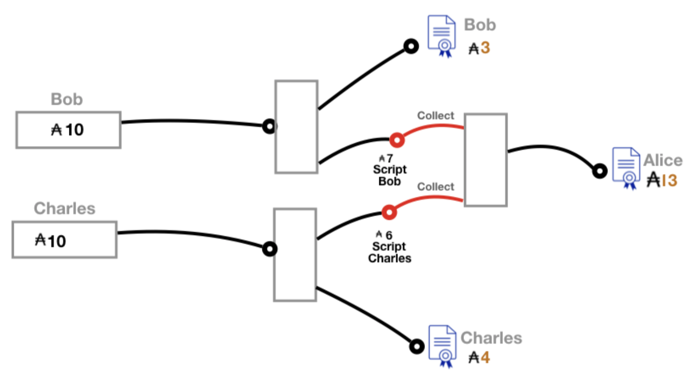
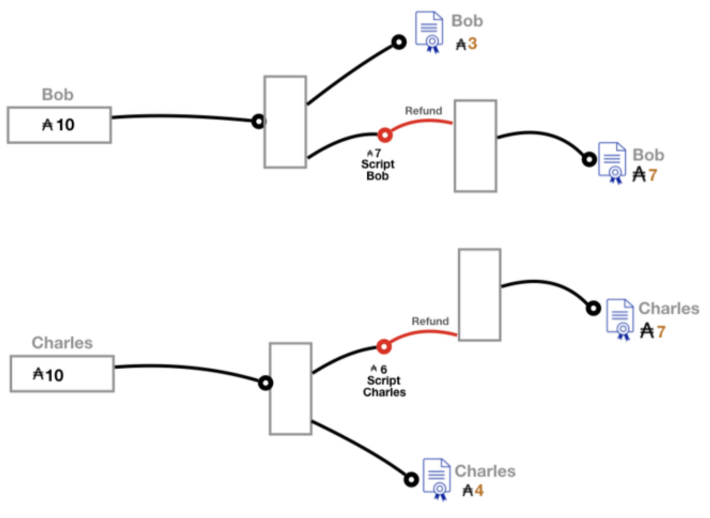

前言
本书教您如何使用IOHK为区块链上的智能合约开发的新型通用语言Plutus编写可靠的智能合约。快来探索Plutus的世界，并通过现实场景和示例代码片段学习我们的新语言！
UTXO类型记帐
为了精通Plutus的所有功能，不可避免的是，您必须首先对Cardano平台上的记账处理方式有深刻的了解。
传统上，我们将资金转移视为在两个银行帐户之间进行转移，或者在数字货币的情况下可能是在互联网地址之间进行。 与许多其他加密货币平台（例如比特币）一样，Cardano平台使用的是称为UTXO风格的记账方法。可在Cardano分类帐正式规范的一部分中找到此类会计的完整正式描述，请参见[7]。
UTXO风格的记账记录的不是帐户之间的资金流，而是交易之间的资金流。每笔交易都有输入（花费的钱来自哪里）和输出（这笔钱要到哪去）。
请注意，事务主体还可能包含其他数据，正如我们稍后在”扩展UTXO模型”一章中检查扩展UTXO模型时所看到的。
请考虑下面的数据流程图，UTXO资金流示例:

黑线表示unspent(未使用)的交易输出，红线表示将这些输出用作后续交易的输入。
垂直未标记的框表示具有多个输入和多个输出的单个交易。
蓝色证书表示插图中剩余的未使用输出。
请注意，在此数据流图的开始处, Alice在此图的开始时间之前的未使用输出中有100个Ada - 这笔钱来自该图范围之外的一项或多项交易。我们用一个盒子(标有她的名字和100个Ada)抽象它。此盒子有两条黑色（输出）线，这些输出的总和总计为100个Ada):
- 先前的58个Ada输出仍未被Alice使用，并且是她最终
unspent(未使用)输出的一部分 - Alice未使用的输出中的42
Ada成为新交易的一部分
现在，Bob从先前未使用的输出中获得了10个Ada。并通过如下步骤花费它们：
- 所有10个Ada都转到新交易中
我们在此说明的这项新交易有两个输入，Alice输入42，Bob输入10。
此交易有两个输出，Bob有2个Ada，Charlie有50。
我们还看到，Charlie从先前未使用的输出中提取了52个Ada，他总共可以在以后的交易中花费102个Ada。鲍勃只剩下一个2 Ada的输出，而Alice其他交易未使用的输出总共有58个Ada。
上面的模型严格显示了几个参与者之间的货币流动。
在此简化版本中，所示的交易无需支付费用,等等。
即使在这个经过简化的模型中，我们也看到一个输出必须始终用尽。也就是说，一个unspent(未使用)输出的记录无法被修改（这将是基于帐户的簿记），只能被完全使用。
为了维护分类帐簿记的完整性，新交易必须具有所有正在使用的未使用输出（合计所有未使用输出的正确数量）。在上面的示例中，我们的新交易从Alice中删除了(即用作输入)未使用的输出值42和Bob的值10，总计52个Ada。
然后，我们必须从该交易中获得52个Ada的输出(2个Ada到Bob，50个Ada到Charlie）。请注意，Bob既有该交易使用的未使用输出，也有该交易产生的未使用输出。 就是说，他从这次交易中得到了（2 Ada）的变化。 由于没有真正的方法来花费部分输出，因此这是UTXO记账处理部分支出的方式 - 通过添加”change”输出。
在此请注意，这种记账方式可以方便（即使不是很直观）将现金流从多个贡献者分配到多个接收者，也就是将其流入一个普通的罐子，（即交易），然后再发送给预期的收款人。
从广义上讲，这是智能合约的目标。
让我们更正式地探讨在处理UTXO事务事件期间发生了什么。
对于我们在此处讨论的基本交易模型，请参考基本UTXO定义。
基本UTXO定义:
在查看交易结构之前，
让我们看看如何在分类帐上进行簿记。包含此信息的分类账上的记录称为UTXO，Unspent Transaction Outputs的简写，在图中表示为UTXO。该记录是一个有限映射，其中的键是一对事务ID和一个索引，TxIn = TxId * Ix。交易IDTxId可以从提交进行处理的完整交易中计算得出，并且是该交易的唯一标识符。索引Ix是必需的，因为可能有多个输出，并且每个索引必须在给定事务的一组输出中具有唯一的标识符。UTXO有限映射中的值是一对硬币值和一个地址，其类型为TxOut = Addr * Coin。
请注意，用户地址始终是公共密钥，
并且他们身上的资金属于能够证明他们拥有相应私钥的实体。
脚本（或智能合约）地址略有不同，我们将在后面看到。
至于交易本身的结构，让我们首先检查输出。单个交易可以将其花费的钱分配到几个不同的地址。
输出（类型为TxOut的值）作为有限映射中的值存储在交易中。
有限映射的键是有限映射上下文中的不同索引值，因此交易ID和索引的组合将成为交易输出的全局唯一标识符。 在UTXO记帐方案中，我们通过此复合全局标识符将输出值与输入值相关联。
输入是不关心顺序的，是一个集合而不是列表。
该集合的元素既不包含要花费的硬币值，也不包含金钱来自的地址。
这是传统会计和UTXO会计之间的主要区别：所花的钱仅由当前驻留在区块链上的分类账上先前处理的交易的未花费输出来指代。
输入集的每个元素都是一对交易ID和一个索引，如上所述，它们唯一地标识了要花费的UTXO中未使用的输出。
处理交易涉及以某种方式更新分类帐上的UTXO，以使正在处理的交易花费的资金可供输出中列出的地址的所有者花费。即，从分类账UTXO中删除了与已处理交易输入对应的所有条目。
此外，交易输出的有限映射中的所有TxOut值都添加到UTXO中，该有限映射的键由正在处理的交易的ID组成，索引值与此交易的输出的有限映射一样。
也就是说，如果tx包含一对输入对和ID为id的输出（in，outs）的有限映射，并且ix |→ (a，c)是输出的条目，则UTXO将添加条目(id，ix）|→ (a，c)。 在这里，我们使用符号k | → v来引用有限映射中具有键k和值v的条目。
现在，我们想用数学符号（这是人类可读的）来简洁地捕获此更新，但是可以将其直接转换为代码.我们在解释将Plutus Tx scrips包含在交易中时也将坚持使用此符号。
以下定义是过滤UTXO有限映射的三种方法：
- 第一个是通过键的子集
ins来过滤UTXO。 - 第二个过滤器补充了第一个过滤器的结果（即，所有UTXO条目没有由输入列表中的键索引）。
- 第三个过滤器按值过滤UTXO条目。

我们希望使用这种表示法来处理新交易。
也就是说，删除用完的输出，并构建交易添加到UTXO的一组新输出(如上所述).
我们可以如下计算输出：

使用这种表示法，我们可以根据交易tx定义UTXO更新，如下所示：

注意，作为验证交易的一部分，必须对交易的输出中的Ada总量和所有输入中的Ada总量进行显式计算。
除了被添加为UTXO条目外，Ada还用于输入。最主要的是库房，它作为一种价值记录在分类账上。例如，交易费用和保证金已支付到库房中。交易中也可能有没有相应输入的输出条目-这些是由于从奖励地址收集奖励而引起的。
现在，为了验证一项交易，需要进行大量的计算，包括交易中的Ada和分类账上其他账户中的Ada，以确保Ada既不被创建也不被销毁。这被称为广义accounting(会计/记账)属性
UTXO记帐方案提供内置保护，以防止给定输出的重复支出。 这种固有的保护，加上广义会计属性的执行，确保不允许出现不诚实的支出。这是卡达诺分类帐簿记系统的一个关键属性，特别是因为存在一个固定数量的Ada，它永远不会改变。
还要注意，交易还包括大量其他数据，如witnesses(见证人)、证书和脚本及其哈希。在这里，我们没有详细介绍Cardano分类账实现中使用的特定类型和计算，但是您现在应该对交易的结构以及如何处理交易有了充分的了解，以便能够理解在使用Plutus代码生成交易时幕后发生了什么。
智能合约
传统合同是关于贷款、销售、租赁等具有法律约束力的协议。智能合同试图从合同的概念中消除”协议”的这一元素，代之以一种软件，以确保任何相关方都不能通过疏忽或恶意行为破坏合同。这是通过放弃对个人、公司或政府行为的依赖，转而依赖计划或智能合约的执行来实现的，以控制合约参与者之间的资金转移。在区块链的账本上永久化程序及其结果。具体来说，参与者只通过分布式加密账本参与智能合约。这确保了整个历史（包括合同的当前状态）以高度的可靠性不可更改地记录下来。
从智能合约作者的角度来看，区块链是一个分布式簿记系统。区块链上的分类账是一个记录，记录谁拥有多少虚拟资源（比特币、Ada等）以及资产何时从一个实体转移到另一个实体。
数字资产的所有者是通过他们的公钥来识别的，他们可能是人，也可能是机器。
在Cardano区块链上，在区块链上运行的智能合约程序是用一种称为Plutus Core的语言编写的。然而，智能合约的作者并不直接编写Plutus Core。Plutus平台（将在下一章讨论）是一个软件开发工具包（SDK），使您能够轻松地编写智能合约，包括最终将作为Plutus Core在区块链上运行的逻辑。
现在，我们将智能合约作为概念进行一些启发，考虑和限制，并讨论称为ACTUS的金融合约用例的详尽分类。
在下一章中，我们将解释软件的特定部分以及它们在构建，编译和执行智能合约中所扮演的角色。
智能合约的力量
让我们从广义的角度来讨论智能合约的功能。构建Plutus智能合约平台的目标是能够对尽可能广泛的合约类型进行建模，因此我们的目标是使其尽可能通用。然而，智能合约只是一个行为完全确定的程序，它不能通过法律制度或其他强制手段迫使参与者以某种方式行事。智能合约也不是参与者签署的具有法律约束力的文件。
智能合约的威力在于它能够充当一个受信任的实体，所有其他参与者都可以根据参与合约的要求将其部分资产转移到该实体。在执行智能合约的方式中，参与者只能直接向该程序捐款或其他代币，而不能向其他参与者捐款，从而剥夺了他们滥用资金和违反合约所代表的协议的机会。
然后，资源将根据合同规则进行重新分配，但永远不会在无限长的时间内锁定合同。这种永远不会无限期锁定参与者资金的特性是任何设计良好的智能合约的关键特征，我们将在接下来的章节中看到如何在某些Plutus智能合约示例的设计中确保这一点。通常，在作者设定的超时时间，返还给合同的所有资金都会退还，但是，根据合同的状态，在超时时发生的情况还有其他选择。
此外，合同程序的代码可供所有签订合同的参与者使用，从而使他们能够就是否参加合同做出明智的决定。这些是智能合约确保人类行为者很难执行不诚实行为的某些方式。
使用可信程序负责合约中涉及的代币的想法作为确保可预测结果的基础
可以很容易地想到将这种范例应用于现有问题的各种用例。通过一个示例可以最好地说明智能合约的目的和功能，我们将在本书中继续使用该示例。 让我们考虑一个众筹活动。这种类型的资源转移计划可以解释为智能合约程序。
任何基本的人群资助者的总体计划通常是相同的。 参与者能够为这一事业做出贡献，希望在某个日期之前筹集的总资金超过提供众筹产品的实体所设定的最低金额。 如果筹集了足够的资金，则该产品将被制造出来并发送给贡献者。 如果不是，则不生产任何产品，并将所有资金退还给贡献者。
在这里，我们可以立即记下合同在众筹者功能中的作用。 此类合同的目的是，在达到目标金额的情况下，开展活动的实体必须同意它将为提供者提供产品，否则退还所缴的款项。使用智能合约，可以强制执行。
合同的执行是指由以下两种类型的事件触发而导致的合同状态更改：
•合同外部环境的变化，例如时间的流逝，以及
•有关参与者的行动
在合同执行期间的不同时间点，可以允许不同的当事人从合同中收取资金，也可以要求他们向合同中付款。
真实世界和不可替代的代币
尽管我们可以通过简单地在区块链上执行来在合同参与者之间强制进行正确的资金转移，但是将真实世界中的项目作为智能合同中的代币进行竞争有些棘手。在深入研究Plutus功能的技术说明之前，务必将此类挑战告知读者。
在处理现实生活中必须转移所有权的物品时，有两种最流行的选择，特别是那些没有相关所有权文件的物品（如大多数小规模物品，如猫、家具等）。
可信第三方
第一种方法是让一个可信的第三方证人确认所涉物品确实到达了预定的接收者。该方应了解物品的真实命运，并受到原所有人和预期新所有人的信任。这在合同的执行中引入了信任元素，这正是区块链技术想要消除的。不过，但是，在这种情况下，信任将仅限于双方均离线同意的无利益关系方。 在这种解决方案的实现中必须发生的是：
- 发送对象的一方、接收方和受信任的第三方各自做出选择：
- 或者他们认为目标接收者收到了物品
- 或者它没有
- 至少三分之二的人选择确认收到代币
- 合同执行其代码的分支，对应于成功的项目转移
仅需要三分之二的各方同意，原因是，如果原始所有者和接收者在项目是否已成功易手上存在分歧，那么受信任的第三方可以通过投票来解决分歧。
例如，该方案在实施代管合同方面可能很有用（在接下来的章节中，我们将使用Plutus看到一个智能合同示例）。如果第三方确认成功接收托管物品，则该物品的卖方将获得款项。如果第三方未确认接收，托管合同中的款项将被退还。请注意，如果买方和卖方都确认买方收到物品，而受信任的第三方没有确认，则托管资金仍将分配给卖方，但”受信任”存在可疑之处。
一个可信的第三方方案也可以用来确认众筹活动的所有参与者都收到了资助的产品。在这种情况下，成功的转移分支机构将把资金释放给第三方托管的项目的卖方。
但是，在现实中这将相当困难-这个受信方是否需要四处走动，以确认正确且无缺陷的物品已交付给每个预期的收件人？ 我们是否需要多个受信任的第三方？ 如何选择它们？
这种情况可能需要更具创造性的代币跟踪解决方案，
或与真正的合同整合在一起，可能因未能分发众筹项目而导致法律后果。
现在，在其中一个捐助者没有收到他们资助的项目的情况下，合同的制定者将面临一项决定。
如果一个人没有收到他们的物品，一种选择是退款给每个人；另一种选择是发起一个退款给每个人。
该选择取决于合同的目的，合同必须适应的现实情况，创建者的偏好等。
回想一下，智能合约的重要特征之一是永远不会锁定其中的资金。因此，如果合约的作者选择等待预定时间，以使受信任的第三方确认所有转移， 在这段时间过后，每个贡献者都必须获得退款。
有可能（尤其是在Plutus平台上）在超时后选择锁定在合同中的资金的另一种重新分配方式。 但是，在某一方未能在给定时间范围内履行合同的预期职责（从而阻碍合同的执行）时，为每个参与者全额退款通常是最自然的选择。
区块链上的不可替代令牌
另一种解决方案是利用区块链上的不可替代令牌。
不可替代的代币是其价值不直接与特定货币（在我们的情况下为Ada）绑定的代币。
这种令牌的许多可能示例之一是咖啡。即使是经过特殊烘焙的咖啡，也无法保证在不同时间或来自不同卖方的价格相同。由于供求关系的变化，其价格将习惯性地波动。
这些类型的令牌不会自动彼此自动交换，也不能自动交换一定数量的货币。在出售或交换每个此类代币时，双方必须商定价格（或在交易的情况下为另一个不可替代的代币）
可以通过唯一ID在区块链上跟踪这些类型的令牌，该ID与地址相关联，因此与所有者相关联，类似于常规的所有权文档。 我们将讨论如何在扩展的UTxO模型中准确构造这样的唯一ID。
我们将在后面章节介绍如何处理自定义令牌。
贷款
现实世界中存在的项目，而不仅仅是存在于区块链中的项目，并不是构建最广泛的智能合约的唯一问题。贷款是另一种类型的合同，其中如果不诉诸法律行动的威胁，则很难取代信任的内容。
从本质上讲，贷款是一种合同，其中一方承诺（将来）支付其目前没有的钱。解决该问题的一种方法是再次依靠第三方。这次，合同依靠该方提前提供贷款。这并不是完全明智的解决方案，部分破坏了贷款的目的-如果有一方愿意冒险承担贷款的全部价值（包括利息），并且没有从合同中受益，为什么这笔贷款甚至是必要的？
还有另一种方法来构建智能合约贷款及其变体。可以在区块链上引入不可替代的代币，即获得贷款的实体交换必须支付给贷款方的总价值（即贷款加利息）。这甚至允许重新协商贷款条款，可能会改变贷款代币的价值。在支持非货币代币的智能合约平台上，这是一种非常有前途的贷款管理方法，前提是有一些现实世界的法律保证在未付款的情况下为贷款人提供支持。还有另一种方法来构建智能合约贷款及其变体。可以在区块链上引入不可替代的代币，即获得贷款的实体交换必须支付给贷款方的总价值（即贷款加利息）。这甚至允许重新协商贷款条款，可能会改变贷款代币的价值。在支持非货币代币的智能合约平台上，这是一种非常有前途的贷款管理方法，前提是有一些现实世界的法律保证在未付款的情况下为贷款人提供支持。
ACTUS
ACTUS是一个正在进行的项目，旨在将所有（或几乎所有）金融合同的分类或分类定义为少量组。 几家主要的金融公司（包括Ariadne，Deloitte和Stevens理工学院）共同创建了这一通用标准。
根据《证券法》的定义，金融合同是:
- 以单独协商的合同、协议或选择权的形式进行的一种安排，用于购买、出售、出借、交换或回购，或金融市场参与者通常达成的其他类似的单独协商的交易。
ACTUS认识到有两种不同的方式来看待金融合同，这两种方式由两个不同的学科描述：
ACTUS数据标准
- 数据标准定义了一组通用的法律术语（或CT属性），在不同的金融协议中用作参数。它是以数据字典的形式实现的，具有按合同类型分类的属性适用性。
ACTUS算法标准
- 算法标准定义了嵌入在法律协议中的逻辑，这些逻辑最终将合同条款转化为实际现金流，或者更一般地说是业务事件。
两个标准都有描述几乎所有金融合同的工具，ACTUS的目标是确保两个标准所描述的内容的语义是相同的。ACTUS分类根据基本算法结构将合同分为若干组。对于同一分类组中的合同，进行大致相同的计算以确定合同的执行。同一组合同之间的差异通常表现在算法中某些参数的取值上。ACTUS网站上提供了每个小组内合同的正式规范。
我们在这里讨论ACTUS分类方法的原因是，在Plutus中实现ACTUS契约的想法在概念上是非常令人兴奋的，这是一个重大的现实世界的实际进展。从ACTUS网站上，
最近的金融危机暴露了风险管理和金融监管方面的严重缺陷。回顾过去，在能够支持财务分析的数据标准中，缺乏及时报告的细粒度数据是造成危机的主要原因。ACTUS项目旨在通过创建金融工具一致表示的全球标准来弥补这一弱点。
金融合同包括诸如期货，贷款债券，抵押等之类的东西。实质上，金融合同是仅处理货币转移和有关未来货币转移的承诺的合同。 这些类型的合同受外部事件（例如股票的市场价值等）的影响。它们通常也是现实世界中所有权变化的结果，这种抵押将用于购买房屋。 但是，它们处理两种主要类型的令牌，
- 货币，
- 以及合约或金融产品本身（例如股票或期货）
这使得金融合同成为智能合同实施的完美候选。货币已经是区块链可以追踪的代币类型中的巨星——毕竟，Cardano是一个加密货币平台。交易合同和金融产品也可以在支持智能合约的分类账上建模。在本书接下来的章节中，我们非常兴奋地探索将所有ACTUS合约表示为智能合约实现的方法。
欢迎来到Plutus - 可靠智能合约的新语言
为什么Plutus？
我们使用高保证软件（尤其是智能合约）的方法背后的秘密是使用高级类型系统的函数式编程。Plutus是一个功能开发和执行平台，用于Cardano结算和计算层的分布式合同应用程序。它提供了一个平台，您可以在这个平台上开发和部署应用程序，它的设计考虑了三个主要受众：开发人员、业务专家和学术界。Plutus嵌入在Haskell中，Haskell程序员很熟悉它，但它比Haskell本身更易于分析。
通过使用Plutus，您可以对正确执行智能合约充满信心。它借鉴了现代语言研究的成果，以领先的纯函数式编程语言Haskell为基础，提供了一个安全的、全栈的编程环境。Plutus提供了相当大的安全优势。它提供了一种更简单、更健壮的方式来显示您的智能合约是正确的，并且不会遇到以前智能合约语言设计中发现的问题。
Plutus为智能合约和分布式应用程序开发提供了一种新的集成方法，比以前的替代方案更方便、更安全。链上和链下代码都基于相同的语言。智能合约开发人员使用统一的代码库，然后Plutus工具链会自动将其分为链上和链下代码和包进行部署。Plutus是基于函数式编程语言比传统的命令式和面向对象编程语言更适合于安全和可验证的程序的思想而设计的。它的设计简洁明了，所面临的挑战是它可以放在餐巾纸上。这个简化的代码是由团队实现的，如图所示：

为开发人员提供了一个SDK，其中包括开始使用Plutus所需的库、API、工具和文档。作为此SDK的一部分，Plutus游乐场可用于测试您的Plutus用例和代码。这是一个用于探索性Plutus开发的轻量级、基于web的测试环境。在这里，您可以轻松地编写和部署合同，而无需安装和维护完整的开发环境和区块链。一旦Plutus与Cardano完全集成，就可以将您在Plutus游乐场开发的合同部署到Cardano区块链本身的结算层。在Plutus 游乐场中开发的合同使用与部署到Cardano mainnet的相同的编程语言和库接口。
关于Plutus框架
Plutus由多个部件组成，这些部件紧密地协同工作。Plutus平台是用于定义用于编写智能合约的组合软件支持的术语，包括用于在Haskell中编写链外代码的库、用于在Plutus事务（Plutus Tx）中编写链上代码的库以及用于测试智能合约的仿真器支持。Plutus Core是指实际的语言，一种设计成链上代码运行的小型函数式编程语言。Plutus Tx是Haskell的一个子集，编译成Plutus Core，Plutus IR是编译成Plutus Core的中间语言，用作编译器编写者的目标语言。
Plutus Playground（简称PP）是一个工具，用于编写和测试用于构建智能合约的任何代码，并定义钱包能够参与合约的端点（例如，向脚本付款、获得退款等）。PP编辑器中定义的另一段主要代码是一个函数，该函数生成一个脚本，该脚本将包含在扩展UTxO模型中钱包所生成的交易主体中。由时间和其他外部因素驱动的合同执行，以及用户的操作，将由Playground工具根据此脚本中的定义进行模拟。在游乐场工具中编写的代码不会与区块链或任何钱包中的数据交互。取而代之的是，它使用了模拟版本，称为mockchain和mock wallet。
请注意，本书打算与最新的PP Web版本同步更新。当两个版本之间存在重大，相关或值得注意的区别时，我们将讨论最新源代码版本中的某些功能。
运行Plutus游乐场
使用Plutus Playground的最简单方法是使用稳定版本。
要使用我们在本书中讨论的版本，并使本书的内容保持同步，请参见
Alpha版本。
在此地址，读者将看到一个用于开发Plutus Tx代码的窗口。 窗口中的代码是用户可以编辑的单个Haskell模块。 还有其他两个选项卡，Simulation和Transactions，这两个选项卡都用于测试在编辑器中编写的代码。
选项卡下面还列出了几个演示，这些演示的代码可以加载到编辑器中：Crowdfunding，Game，Messages和Vesting示例。 我们将在相应的示例章节中讨论这些内容。 还有一个指向Plutus教程的链接，该教程与本书的各章都有很多内容。
有关高级用法的说明，包括设置Plutus Playground的本地Docker映像，或在本地使用Haskell库，请参阅Plutus存储库README。
Plutus Tx
Plutus Tx是什么
Plutus Tx是我们为Haskell程序的特殊分隔部分指定的名称，该程序将被编译为Plutus Core（通常在交易中进行，因此称为Tx）。因此，生成的Plutus Core表达式可以是交易数据或存储在分类帐中的数据的一部分。这些代码段需要在区块链上进行特殊处理，被称为Plutus脚本。 在下一章扩展的UTXO模型中，我们将讨论它们用于控制资金转移的机制。
Haskell程序中的这些特殊的Plutus Tx部分本身就是Haskell。 严格来说，只支持Haskell的一个子集，但是大多数简单的Haskell都可以工作，并且编译器会告诉您是否使用了不受支持的内容。本章介绍了Plutus Tx语言。 有关Plutus Tx编译到的Plutus Core本质的深入讨论，请参见[2]。
Plutus平台使用的关键技术称为分阶段元编程。这意味着Haskell主程序会生成另一个程序，在本例中为将在区块链上运行的Plutus Core程序。Plutus Tx是我们用来编写这些程序的机制。事实上，它只是Haskell，这意味着我们可以使用与主程序相同的技术，并且我们可以在两者之间共享类型和定义。
编写基础的PlutusTx程序
1 | -- Necessary language extensions for the Plutus Tx compiler to work. |
- 1⃣️ 主要的Plutus Tx模块
- 2⃣️ 对于lifting的额外支持
- 3⃣️ 内置函数
- 4⃣️ 用于示例
Plutus Tx使用了模板Haskell。这有几个原因：
- 模板Haskell允许我们在编译时（即我们进行Plutus Tx编译时）进行工作。
- 它允许我们连接实际调用Plutus Tx编译器的机器。
因此，我们将看到模板Haskell引号的一些用法。模板Haskell quote使用特殊的括号[||和||]，类型为Q(TExp A)。这意味着它表示一个a类型的表达式，它位于引号的Q类型中。可以使用$$运算符将此类型的定义拼接到程序中。
还有一个缩写
TExpQ a表示Q(TExp a)，它避免了一些括号
我们将使用的关键函数是compile。 compile的类型为TExpQ a → TExpQ (CompiledCode a)。这是什么意思？ -我们已经看见TExpQ - CompiledCode a是一个已编译的Plutus Core程序，对应于类型为a的Haskell程序
这意味着compile允许您获取（quoted(引用的)）Haskell程序，并将其转换为（引用的）Plutus Core程序，然后您可以将其拼接到主程序中。在编译Haskell主程序时会发生这种情况（因为这是运行模板Haskell的时候）。
如果你已经知道阶段元编程，你可能会感到困惑。我们不应该在运行时而不是编译时生成Plutus Core程序吗？这会很方便，但是我们需要Haskell编译器来帮助我们编译任意Haskell，所以我们必须在编译时这样做。稍后我们将看到，我们可以在运行时将一些值从Haskell提升到Plutus Core，这足以让我们编写依赖于运行时值的程序。
重申一下：compile需要Template Haskell引用，因此您在引号内编写的内容只是正常的Haskell。
下面是我们可以编写的最基本的程序：一个计算结果为整数1的程序。
Plutus Core语法看起来不熟悉。 很好，因为它是”汇编语言”，您无需检查编译器的输出。但是，出于本章的目的，对其进行研究很有启发性，以使您对正在发生的事情有一个模糊的想法。
1 | {-| |
1⃣️ 我们始终在Plutus Core中使用无界整数，因此我们必须将此数字字面量固定为Integer而不是Int。
2⃣️ 引用的类型为TExpQ Integer。
3⃣️ compile将TExpQ Integer放入TExpQ (CompiledCode Integer).
4⃣️ 拼接($$符号)将TExpQ (CompiledCode Integer)插入程序。
我们可以在这里看到元编程的工作原理：Haskell程序1在编译时变成了CompiledCode Integer，我们将其拼接到Haskell程序中，然后可以在运行时进行检查以查看生成的Plutus Core（或放在区块链上）。
适应这里最重要的事情是我们在第一个示例中看到的模式：一个TH引号包裹在对compile的调用中，然后包裹到$$拼接中。这就是我们编写所有Plutus Tx程序的方式。
这里有一个稍微复杂一点的程序，即整数的恒等式函数。
1 | {- | |
到目前为止，如此熟悉：我们将一个lambda编译为一个lambda(“lam”)。
函数和数据类型
您还可以在表达式内使用函数。实际上，您通常会希望将Plutus Tx程序的整体定义为引号之外的定义，然后只需在引号内对其进行调用。
1 | 2⃣️ |
1⃣️
addInteger来自Language.PlutusTx.Builtins，并且映射到Plutus Core中的内置整数加法。2⃣️ 可重用的函数以GHC的
INLINABLE实用程序标记。非本地函数通常必须在Plutus Tx块中使用，因为它指示GHC保留Plutus Tx编译器所需的信息。尽管这并非总是必要的，但最好将所有此类函数标记为INLINABLE。
我们可以自由使用普通的Haskell数据类型和模式匹配：1
2
3
4
5matchMaybe :: CompiledCode (Maybe Integer -> Integer)
matchMaybe = $$(compile [|| \(x:: Maybe Integer) -> case x of
Just n -> n
Nothing -> 0
||])
与函数不同，数据类型不需要在表达式内部使用任何特殊的注释，因此我们可以使用Prelude中的Maybe之类的类型。这也适用于您自己的数据类型！
下面是一个小示例，其中我们自己的数据类型表示一个潜在的开放结束日期。1
2
3
4
5
6
7
8
9-- | Either a specific end date, or "never".
data EndDate = Fixed Integer | Never
-- | 检查给定时间是否超过结束日期。
pastEnd :: CompiledCode (EndDate -> Integer -> Bool)
pastEnd = $$(compile [|| \(end::EndDate) (current::Integer) -> case end of
Fixed n -> n `lessThanEqInteger` current
Never -> False
||])
Plutus Tx 的Prelude和内置函数
Language.PlutusTx.Prelude模块是常规Haskell Prelude的直接替代品，但重新定义了某些功能，以使Plutus Tx编译器更易于处理。 每当编写希望使用Plutus Tx编译器编译的代码时，都应使用Plutus Tx Prelude。
为了使用Plutus Tx Prelude, 需要使用NoImplicitPrelude语言标记并导入import Language.PlutusTx.Prelude.
Plutus Tx具有一些可用于处理原始数据（整数和字节串）的内置类型和功能，以及一些特殊功能。 这些内建函数也从Plutus Tx Prelude中导出。
内置的error值得一提。error会导致交易在评估时中止，这是发出验证失败的信号的方法。
提升值
到目前为止，我们已经看到了如何静态地定义代码片段（当您编译主Haskell程序时），但是您可能希望动态地定义代码片段（当您运行主Haskell程序时）。例如，您可能正在编写交易主体以启动众筹智能合约，这需要通过用户输入来确定目标的大小、活动开始和结束时间等参数化。
您可以通过将静态代码编写为一个函数，然后在运行时传递参数（通过lifting它，然后将两个程序一起应用）来实现此目的。 作为一个非常简单的示例，让我们编写一个addOne函数。
1 | addOne :: CompiledCode (Integer -> Integer) |
现在，假设我们想在运行时将其应用于4，从而为我们提供了一个计算为5的程序。 好吧，我们需要将参数(4)从Haskell提升到Plutus Core，然后将函数应用到它。
1 | {- | |
- 1⃣️
applyCode应用一个CompiledCode到另一个 - 2⃣️
unsafeLiftCode提升参数n到CompiledCode Integer
我们使用unsafeLiftCode函数提升了参数。为了使用它，一个类型必须具有Lift类的实例。实际上，您应该使用Language.PlutusTx.Lift中的makeLiftTH函数生成它们。提升功能使得在Plutus Tx程序内部以及使用该程序的外部代码中都可以轻松使用相同的类型。
unsafeLiftCode是”不安全的”，因为它会忽略因lifting不受支持的内容而可能发生的任何错误。
组合程序将原始已编译的lambda应用于提升后的值（请注意，由于我们已将加法运算编译为内置函数，因此lambda有点复杂了）。然后，我们使用了Plutus Core的CK评估程序来评估程序并检查结果是否符合我们的预期.
这是我们的自定义数据类型的示例。输出是False的编码版本。1
2
3
4
5
6
7
8
9
10
11
12
13makeLift ''EndDate
{- |
>>> let program = pastEndAt Never 5
>>> pretty $ runCk program
(abs
out_Bool (type) (lam case_True out_Bool (lam case_False out_Bool case_False))
)
-}
pastEndAt :: EndDate -> Integer -> CompiledCode Bool
pastEndAt end current =
pastEnd
`applyCode` unsafeLiftCode end
`applyCode` unsafeLiftCode current
扩展的UTXO模型
本章旨在帮助读者更清楚地了解Plutus在Cardano-Shelley区块链账本中的位置。在这里，我们将对扩展的UTXO模型进行高层次的解释，并向读者介绍使用scripts(脚本)作为在区块链上制定智能合约的工具的想法。在本章中，我们使用并构建了UTXO风格记账一章中的概念和符号。
在基本的UTXO模型中，用于授权交易的方案是可靠的，但有些基础。 它也仅限于严格的Ada会计。
扩展的UTXO模型为基于UTXO的Cardano区块链带来了以太坊基于帐户的scripting模型表达的重要部分，其中包括智能合约支持。该扩展包含两个组件：
交易所携带的数据的扩展以及节点所执行的相应处理方案- 钱包后端的扩展，便于协调链上计算执行的链外代码。
- 请注意，扩展的UTXO钱包必须有权访问分类帐数据，以便能够随时查看（或查找）指定地址的输出
在本章中，我们重点讨论第一部分。在扩展的UTXO模型中，必须进行额外的链上计算来验证交易。如果没有scripts，Shelley分类账UTXO状态更新规则基本上由两个步骤组成（当然，这两个步骤都是由节点执行的计算，并且都是链上的）:
- 检查交易是否有效，包括验证以下内容：
- 它是活动的（交易时间尚未过去）
- 花费的Ada值为非负
- 广义记账属性持有
- 交易金额不超过最大金额
- 费用正在支付
- 等等
- 检查事务正在执行的每个操作是否由相应的私钥的持有者
witnessed(见证)- 每个输出的支出（由key持有人见证，用于支出资金的地址）
- 领取奖励（由奖励地址的抵押密钥的持有人见证）
- 每个证书的应用（由证书作者见证）
- genesis(创始) key delegations
对于这种类型的记账的详细形式描述，我们将读者再次引向[7]。扩展Cardano分类帐功能的主要方法是在第二步中添加script功能。
Scripts
回想一下Plutus Tx一章，脚本（特别是Plutus脚本）是交易携带的Plutus核心表达式（或者存储在分类账上）。它们是在Haskell程序的一个特殊分隔的部分中定义的，称为Plutus Tx，然后编译成Plutus Core。
脚本是将智能合约功能添加到扩展的UTXO模型的一种方式。 本书的许多后续章节都讨论了定义特定智能合约的构建脚本。 但是，在本节中，我们通常讨论扩展的UTXO模型中如何使用脚本。 有关带有脚本的扩展UTXO模型的正式规范的草案，请参见[8]。
脚本(如witnesses(见证人))是确保事务仅执行授权操作的另一种工具。witnessing(见证)输出(非脚本)支出的目的是通过检查输出是否确实由该密钥签名(见证)来验证支出该输出的钱包是否具有与相应UTXO条目中的地址(即支出资金的地址)相关联的私钥。
脚本s :: Script有自己的地址a :: Addr_script，可以向其付款。该脚本地址是脚本的哈希值。因此，对于脚本，我们要检查交易（以及生成该交易的钱包）是否具有该地址为哈希值的原始脚本。整个验证程序脚本本身永远不会存储在分类帐中，仅存储其哈希，并且仅作为属于该脚本的未使用的UTXO条目的地址。
脚本的作用不是在当前事务中生成额外的输入或输出（或产生新事务）。
脚本仅用于验证给定事务是否正在消耗未使用的输出，是否允许这样做。此脚本锁定方法仅与UTXO中与脚本地址相关联的那些输出有关，这意味着这些输出属于脚本。
例如，回想一下众筹活动计划。 如果运动的所有者是时候收集捐款了，他的钱包应该产生一个带有输入的交易，该输入对应于资助者的捐赠（即分类账UTXO中的条目，在Addr字段中具有该众筹合同的脚本地址）。
此交易的输出必须与贡献者的输入加上交易费用的总和相同，可能在每个交易的Addr字段中有所有者自己的地址。
这种交易所携带的脚本的目的将是证明对UTXO条目的这种使用是被授权的，例如 达到了活动目标，并且在当前时间间隔内，允许所有者收取捐款。
钱包需要计算费用，或者将其添加到输入中，或者在可能的情况下将其减去到输出中。
确切的行为应该由用户配置。请注意，更改输入和输出会影响交易费用。但是，还要注意，费用总是可以预先计算并全额支付的，因为携带脚本的事务附带了验证它所需的所有输入、输出和其他数据。因此，不存在交易费用不足的问题。
在这里，我们必须注意的是，使用这个脚本授权一个输出的开销时会用到一些数据，包括validator(验证器)脚本、redeemer(赎回者)脚本、data(数据)脚本和合同的数据类型等。这些都是Plutus非常重要的特性，并且是使执行依赖合同状态的验证成为可能的工具。我们将在下一节中讨论每种方法的作用，并在后面的每个示例中解释每种方法的用法。
Validator, Redeemer和Data Scripts
Validator脚本是带有几个输入参数的Plutus Core函数，它们也是Plutus Core表达式。
- Validator script
- 由一笔交易携带的脚本地址中的资金
- 在交易内部，
Validator脚本存储为一个有限映射，由该脚本的哈希索引
- 在交易内部，
- 是下面讨论的以下3种类型的函数
- data script
- redeemer script
- 交易和分类帐数据
- 返回一个布尔值，表示验证结果
- 由一笔交易携带的脚本地址中的资金
- Data script
- 由支付给脚本的交易携带
- 在交易中，数据脚本由输出的索引
ix索引，该索引用于向脚本付款
- 在交易中，数据脚本由输出的索引
- 包含有关给定智能合约的状态信息，例如
- 众筹活动参与者的公钥，或
- 参与者必须猜猜单词的哈希值才能赢得合同锁定的资金
- 全部存储在分类帐中
- 当脚本验证需要时计算的哈希值，不存储在链上
- 由支付给脚本的交易携带
回想一下，在经典模型中，UTXO条目的形式是(txid，ix) |→ (a，c).
对于扩展模型，如果a :: Addr_script是脚本地址，我们必须将其他数据存储在分类帐中，该分类帐将UTXO条目的键(txid，ix)与支付给该脚本的交易携带的数据脚本相关联。请注意，在交易内部，只能使用索引值来查找数据脚本。 在UTXO上，交易ID也包含在用于查找数据脚本的密钥中。 这是承载它的交易的ID。
- Redeemer script
- 由从脚本地址花费资金的交易携带
- 在事务中，
Redeemer脚本通过其预期使用的validator(而不是Redeemer本身)的哈希索引
- 在事务中，
- 通常代表钱包选择采取的行动，例如
- 从脚本中收集资金
- 退还对脚本的付款
- 猜测一个单词
- 给定其他输入数据(即数据脚本，分类帐状态和携带交易数据)，只有
redeemer脚本的唯一值才会导致validator的评估结果为true。 - 值从不存储在链上，只作为交易数据的一部分出现
- 当
script验证需要时计算的哈希值，不存储在链上
- 由从脚本地址花费资金的交易携带
当执行特定动作的条件得到满足时（即，用户执行特定动作或达到特定时间），此script值必须由钱包确定性地生成。
合同的开发人员有责任确保事件触发器、端点和validator script的定义正确无误。
- 一个
PendingTx值.- 包含有关当前交易的信息
- 输入和输出
- 有效期等
- 还包含有关分类帐状态的信息，该信息由进行交易验证的特定节点提供
- 包含有关当前交易的信息
当我们说输出被脚本锁定或属于脚本地址时，这意味着该UTXO条目的地址是某个验证程序脚本的哈希（不是赎回者，也不是数据脚本）。
这种使用哈希的地址模型与经典的UTXO模型中的地址相距不远，经典的UTXO模型中的地址类型包含paying(付款)和staking(锁定)(public，即验证)密钥。
与常规地址一样，使用script地址实际上可以完成两件事。可以创建与其关联的UTXO条目(即，支付给脚本)，并消费与该脚本关联的条目。支付给脚本的交易必须具有输出ix |→ (a，c)，以使地址a是它要支付的validator脚本的哈希值(由钱包进行链下计算)。它必须另外带有与此索引ix相关联的data脚本。它甚至可以携带多个data脚本，并在同一合同的多个不同状态下付款(当然，输出不同)。
无需使用散列到此处的validator来执行script验证。
实际上，处理此类事务的节点确实需要在此处完全看到原始验证器，除非这个相同的交易也是从相同的脚本地址开始消费的。
现在，为了证明交易ix确实有权使用validator脚本锁定的输出，进行验证的节点必须将validateScript函数应用于该validator脚本，以及上面的三个参数，这实际上是将validator应用于三个参数的计算。
由于这三个脚本的类型不同，因此有必要在这里使用这样的泛型求值器函数。正如Plutus Tx一章所指出的，data和redemiter脚本可以是由template Haskell生成的不同类型的Plutus Core表达式，
因此，泛型alidateScript函数所知道的就是这三种类型的脚本。但是，validator本身期望的是其必须在其上计算的确切类型的项，例如一个公钥类型的项作为数据脚本参数。
总而言之，节点计算
1 | validateScript vld dsc rdm |
where
- 验证器
vld来自交易数据并散列到与交易所花费的分类帐UTXO条目的地址相等的值 - 数据脚本
dsc存储在分类帐中，并与交易正在花费的UTXO条目相关联(可以通过该条目作为关键字来查找) redeemer rdm是钱包(或其所有者)在生成交易时执行的操作的选择，直接来自交易数据
为了使验证成功，合同(验证者)必须在给定状态的上下文中允许选择操作。 请注意，本着UTXO风格记帐的精神，合同状态永远不会在UTXO条目中更新。 您只能使用该条目，并使用不同的数据脚本创建一个新条目。
如果此validateScript计算返回true，则验证过程将继续。否则，将取消整个交易。本质上，给定分类账状态和携带交易数据的上下文，validator(验证器)用于显示所提供的操作(redeemer)确实会导致正确的状态(数据脚本)，这意味着代码定义的智能合约功能在验证器中允许花费脚本拥有的资金。
请注意，与传统的UTXO模型一样，使用此模型，未验证的交易不会产生费用。但是，与经典模型不同，扩展模型允许从不属于生成交易的钱包的脚本地址进行支出。这是因为必须提供validator脚本（而不是私钥）才能从该地址使用，并且脚本是公开可用的。
读者稍后还会注意到，在我们讨论编写一个完整的Plutus合同时，返回PlutusTx验证程序脚本的off-chain函数接受一个参数。对于每种合同，此参数的类型不同。例如，对于众筹合同，它将是Campaign类型的术语:
1 | contributionScript :: Campaign → ValidatorScript |
任何类型的合同的此参数都是一种数据结构，其中包含有关合同的必要的非状态，不变的数据(例如，campaign所有者的公钥)。通过此数据结构参数传递给验证器的值不仅用于在验证器中定义某些合同功能，而且还用于合同识别。通常，以这种方式来定义此无状态合同结构参数的类型是一个好主意，即，该参数必须使生成的合同具有唯一性，从而使其验证者哈希地址也具有唯一性。 这样，用户就可以（例如）准确地支付他们想要的众筹实例的费用，而不会意外地以top hat(大礼帽)代替Plutus教科书！
附加扩展模型说明
共享Plutus代码
下一章将详细介绍的链下代码是由用户的钱包(或在Playground模拟器中为mock钱包)运行的。链下代码的主要目标是在正确的时间生成正确的脚本，并构建携带该脚本的事务。
回想一下，Plutus Playground是一个平台，可以在该平台上编写链上和链下代码，以在模拟链上模拟智能合约功能。在模拟过程中，模拟钱包共享在Playground中编写的所有代码，并且任何钱包都可以使用。
在真实的Cardano区块链环境中，链上和链下合约代码应由参与该合约并通过网络分发的所有钱包使用。这意味着需要另一种可靠的方式共享Plutus代码。链上代码被散列，并且散列存储在UTXO中，为参与者提供了一种方法来验证它确实是正确合同的正确代码。链下代码只是生成脚本和交易的一种方式，然后将其作为交易处理的一部分进行验证和认证。因此，没有必要使用区块链为其真实性提供额外的保证-仅通过像GitHub这样的可靠代码存储库共享此类代码就足够了。
然而，与编写和理解法律合同所需的法律诀窍类似，智能合约的创建者和用户需要对Plutus代码有足够的了解，才能相信合约正在做他们期望的事情。在这种情况下，加密安全是无能为力的——这就是这本书的用武之地！
回滚和其他扩展UTXO模型注意事项
鉴于区块链事件（如交易确认）可以触发链外协调代码的执行，我们需要仔细考虑需要回滚依赖于回滚交易的任何操作的含义。这里不提供此功能的详细信息。
扩展UTXO系统还有其他一些与Plutus用户不太相关的特性，我们在本章中也不会详细解释。
使用脚本添加分类帐功能
在本书的后续示例中，我们将引导读者逐步完成Plutus合同的构建，测试和使用过程。
有关使用脚本向UTXO分类帐添加特定功能的工作示例，我们希望向读者介绍以下文档，
- UTXO分类帐上的多币种，请参阅4
- 一种基于脚本的模型的实现，用于模拟链上不同类型的货币和不可替代的代币
- 使用脚本的多重签名方案的正式规范，参见9
- 强制执行针对
spending outputs(支出输出)的自定义witnessing(见证)策略的正式规范
- 强制执行针对
编写链下代码
使用Plutus需要编写链上代码和链外代码，这两部分可以很好地协同工作。在开始编写代码之前，我们将简要介绍完整的Plutus合约的组成，以及链上和链下代码在其中的作用。
Plutus合约
- Plutus合约是Haskell程序，
- 可在用户的钱包中运行
- 也向区块链提交代码(脚本)以供节点运行
- 在Plutus智能合约定义中，我们有端点
- 端点是钱包执行的函数，用于参与正在定义的智能合约（通常由用户输入数据参数化）
- 端点是链下函数
- 端点用于构建事务并提交以进行处理
- 端点调用生成
Plutus Tx代码(特别是validator,redeemer和data scripts)的函数，这些代码将包含在事务中并由节点在链上执行
- 除端点外，Plutus合约定义可能还包含
- 所有必要的
imports - 数据类型定义，表示有关合同特定实例的不可变信息，例如合同的所有者以及合同中涉及的任何截止日期，例如
Campaign(活动)或Game(游戏) - 为合同构建
validator,redeemer和data scripts的函数，通常由该类型的术语(Campaign、Game等)参数化 - 用于端点执行的事件触发器和处理程序定义
- 计算所需的任何附加功能
- 所有必要的
- 链下(端点)代码可以由任何通过
wallet monad实现特定API的钱包执行(如下所述)- 这允许钱包执行特定于钱包的计算，包括构建事务、捕获和抛出错误、记录消息等。
- 链上(
Plutus Tx)代码在编译时生成- 在Plutus合约中定义并包含在端点生成的交易中
- 由节点执行以授权交易的
spending(支出)脚本输出
- Plutus合约至少应包含端点，这些端点通过使用
validator(验证器)，redeemer(救世主)和data scripts(数据脚本)来生成交易，使用户能够- 向合同支付（这涉及使用
validator和redeemer脚本来创建属于合同的unspent(未使用)输出） - 从合同中支出（这将要求节点在特定的
validator，redeemer和data scripts上执行链上计算以解锁正在spent(消耗)的输出）
- 向合同支付（这涉及使用
让我们先看看Plutus合同的链下部分，这些代码将由钱包执行。
在任何实现MonadWallet的monad中，此类代码都由monadic计算表示:1
type MonadWallet (m :: * -> *) = (WalletAPI m, WalletDiagnostics m) :: Constraint
通过编写独立于monad特定选择的代码，我们确保它在不同的钱包实现中运行，尤其是Plutus Playground的模拟钱包和实际的Cardano钱包。
那么WalletAPI和WalletDiagnostics的约束是什么？1
2class MonadError WalletAPIError m => WalletDiagnostics (m :: * -> *) where
logMsg :: Text -> m ()
因此，这使我们可以抛出并捕获错误(WalletAPIError类型)并记录诊断消息。
让我们尝试一下写个Hello World的链下Plutus代码：1
2
3
4
5
6
7
8
9
10
11
12
13
14
15
1⃣️
2⃣️
3⃣️
module OffChain.Hello where
import Language.PlutusTx.Prelude 4⃣️
import Playground.Contract
import Wallet
hello :: WalletDiagnostics m => m ()
hello = logMsg "Hello from the wallet!"
$(mkFunctions ['hello]) 5⃣️
- 1⃣️
Plutus带有自己的Prelude，因此我们禁用了标准Haskell Prelude的隐式导入。 - 2⃣️
TemplateHaskell用于将Haskell类型“提升”为Plutus Core类型，还用于在Playground中提供off-chain链下代码，如我们的示例所示。 - 3⃣️
Plutus Template Haskell生成的代码缺少类型签名，因此我们禁用了这可能引起的警告。 - 4⃣️ 我们总是导入
Plutus Prelude - 5⃣️ 使用
TemplateHaskell，mkFunctions将使其参数列表中命名的所有函数在Playground上可用。
将此代码粘贴到Playground的Editor选项卡中并进行编译，将使hello函数在Simulation选项卡中可用，因此我们可以将其添加为其中一个钱包的action(操作)。

evaluation(执行)后，我们将在Transactions选项卡的Logs部分中看到预期的消息:

WalletAPI类更为复杂:1
2
3
4
5
6
7
8
9class WalletAPI (m :: * -> *) where
submitTxn :: Tx -> m () 1⃣️
ownPubKey :: m PubKey 2⃣️
sign :: ByteString -> m Signature 3⃣️
createPaymentWithChange :: Value -> m (Set TxIn, Maybe TxOut) 4⃣️
registerOnce :: EventTrigger -> EventHandler m -> m () 5⃣️
watchedAddresses :: m AddressMap 6⃣️
startWatching :: Address -> m () 7⃣️
slot :: m Slot 8⃣️
- 1⃣️ 提交一个交易
- 2⃣️ 获取属于钱包的公钥
- 3⃣️ 对任意字符串进行加密签名
- 4⃣️ 创建一组交易输入和可选的交易输出以进行更改，适用于从钱包中支付给定值
- 5⃣️ 注册事件触发器，以便在触发器条件变为真时立即执行指定的操作
- 6⃣️ 获取钱包正在监视的地址
- 7⃣️ 开始监视地址的更改
- 8⃣️ 获取当前时间(
slot)
让我们通过重新实现Playground中的payToWallet_函数开始探索WalletAPI，该函数只是向另一个钱包支付一定数量的Ada.1
2
3
4
5
6
7
8
9
10
11
12
13
14
15
16
17
18
19
20
21
22
23
24
25
26
27
module OffChain.PayToWallet where
import Language.PlutusTx.Prelude
import Ledger
import Ledger.Ada
import Playground.Contract
import Wallet
import Wallet.Emulator.Types (walletPubKey)
import Control.Monad (void)
import Data.Maybe (maybeToList)
myPayToWallet :: MonadWallet m => Wallet -> Ada -> m () 1⃣️
myPayToWallet wallet ada = do
let pubKey = walletPubKey wallet 2⃣️
val = toValue ada
o = pubKeyTxOut val pubKey
(ins, mo) <- createPaymentWithChange val
void $ createTxAndSubmit
defaultSlotRange 3⃣️
ins
(o : maybeToList mo)
$(mkFunctions ['myPayToWallet])
- 1⃣️
myPayToWallet函数接受两个参数，用于发送资金的钱包和要发送的金额 - 2⃣️ 我们可以使用
walletPubKey查找一个钱包的公钥 - 3⃣️ 我们在此处使用
defaultSlotRange表示交易将始终有效。
与我们的第一个hello示例相反，函数myPayToWallet具有参数。将函数作为action(动作)添加到模拟后，将提示用户在Playground中输入这些值.


注意我们如何使用createPaymentWithChange来帮助我们构建交易：给定一个值，此函数将选择属于该钱包的合适的unspent(未使用)的交易输出，我们可以将其用作输入。
如果输入的总和超过了我们想要转移的值，它还将有选择地创建一个新的交易输出，该更改可以到达该输出。
顺便说一句，向公用密钥支付一些值非常普遍，以至于为此存在辅助函数payToPublicKey和payToPublicKey_(payToPublicKey返回生成的事务，payToPublicKey_不返回).
1 | payToPutoblicKey :: (Monad m, WalletAPI m) => SlotRange -> Value -> PubKey -> m Tx |
使用payToPublicKey，我们可以将myPayToWallet编写得更简单，如下所示:1
2
3
4
5myPayToWallet :: MonadWallet m => Wallet -> Ada -> m ()
myPayToWallet wallet ada = do
let pubKey = walletPubKey wallet
val = toValue ada
payToPublicKey_ defaultSlotRange val pubKey
现在我们已经了解了如何创建和提交事务，让我们使用registerOnce来注册触发器.
触发器
钱包可以通过指定EventTrigger和EventHandler来注册一个或多个触发器。事件触发器定义了一个条件，事件处理程序描述了条件变为true后该做什么.
以下函数允许我们构造触发器:1
2
3
4
5
6
7
8neverT :: EventTrigger 1⃣️
alwaysT :: EventTrigger 2⃣️
notT :: EventTrigger -> EventTrigger 3⃣️
andT :: EventTrigger -> EventTrigger -> EventTrigger 4⃣️
orT :: EventTrigger -> EventTrigger -> EventTrigger 5⃣️
slotRangeT :: SlotRange -> EventTrigger 6⃣️
fundsAtAddressGeqT :: Address -> Value -> EventTrigger 7⃣️
fundsAtAddressGtT :: Address -> Value -> EventTrigger 8⃣️
- 1⃣️ 永远不为true
- 2⃣️ 总是为true
- 3⃣️ 给定触发器的逻辑取反
- 4⃣️ 逻辑
conjunction(连接): 当两个触发器都为真时为真 - 5⃣️ 逻辑
disjunction(析取)：当至少一个触发器为真时为真 - 6⃣️ 检查当前
slot(插槽)是否在给定范围内 - 7⃣️ 如果该地址的资金至少为指定值，则为true
- 8⃣️ 如果该地址的资金大于指定的值，则为true
触发器
fundsAtAddressGeqT和fundsAtAddressGtT只会将那些unspent(未使用)的交易输出存入在注册触发器之后创建的account中.
事件处理程序定义为:1
EventHandler :: (AnnotatedEventTrigger Bool -> m ()) -> EventHandler m
类型为AnnotatedEventTrigger的参数允许处理程序检查复合触发器的哪一部分(使用and和/或orT构建的触发器)实际上已变为true。
例如，我们可以编写一个函数，该函数将等待指定的slot直到执行交易：
1 |
|
- 1⃣️ 我们给出三个参数，我们要等待的
slot(时间段)，我们要向其发送资金的钱包，以及要发送的金额。 - 2⃣️ 在这里，我们注册触发器
- 3⃣️ 一旦当前
slot(插槽)为指定的插槽，则将触发此操作, 或稍后 - 4⃣️ 处理程序使用
const忽略AnnotatedEventTrigger并执行交易


这实际上是一个不寻常的示例，我们并不需要触发器来达到这种效果，因为我们可以简单地使用交易的slot range来代替：
1 | waitUntil :: MonadWallet m => Slot -> Wallet -> Ada -> m () |
- 1⃣️ 我们不象以前那样使用
defaultSlotRange，而是说只有在到达slot(插槽)sl时，此交易才有效。
Slot Ranges(插槽范围)
交易的slot range决定交易在其中有效的slot。我们可以用以下函数构造slot ranges:
1 | always :: SlotRange 1⃣️ |
- 1⃣️ 所有
slots(插槽)的范围；使用此范围的交易将始终有效。 - 2⃣️ 默认的
slot范围，always的同义词 - 3⃣️ 专门由指定的
slot组成的范围。 - 4⃣️ 给定两个插槽
a和b，interval a b是从a开始并在b之前一个slot结束的范围，因此该范围包含a，但不包含b. - 5⃣️ 从给定的插槽(包括在内)开始，并且永不结束的范围。
- 6⃣️ 在给定的
slot之前结束一个slot的范围，不包括在内。 - 7⃣️ 如果两个给定范围
intersection(交叉)，则提供它们的overlap(重叠)。 - 8⃣️ 包含两个给定范围的最小范围
可以使用以下函数检查插槽范围：1
2
3
4
5
6member :: Slot -> SlotRange -> Bool 1⃣️
overlaps :: SlotRange -> SlotRange -> Bool 2⃣️
contains :: SlotRange -> SlotRange -> Bool 3⃣️
isEmpty :: SlotRange -> Bool 4⃣️
before :: Slot -> SlotRange -> Bool 5⃣️
after :: Slot -> SlotRange -> Bool 6⃣️
- 1⃣️ 检查给定的插槽是否包含在给定的范围内。
- 2⃣️ 检查两个给定范围是否
overlap(重叠)，即至少有一个公共插槽。 - 3⃣️ 检查第一个范围是否完全包含第二个范围，即第二个范围的所有成员是否都是第一个范围的成员。
- 4⃣️ 此范围是否为空，即不包含任何插槽？
- 5⃣️ 检查给定的插槽是否早于给定范围的开始。
- 6⃣️ 检查给定的插槽是否晚于给定范围的末尾。
至此，我们通过Wallet API的简短教程结束。我们已经了解了如何记录消息，如何创建和提交简单的交易，如何使用触发器在执行特定操作之前等待条件变为真，以及如何创建，检查和使用slot范围。
在下一章中，我们将深入研究链上代码并创建我们的第一个智能合约。
我们的第一个链上代码
现在，我们对Wallet API有所了解，并且知道如何编写链下代码，让我们看一下链上代码的第一个示例，一个简单的猜测游戏。
这个游戏的想法是，一个玩家可以想出一个秘密的话，然后捐赠一些Ada作为奖励谁猜对了秘密。
和往常一样，在编写Haskell代码时，我们应该首先考虑类型。特别是，我们必须找出data scripts和redeemer scripts中包装的类型。
如果猜测成功，则redeemer scripts将解锁奖励，因此它必须包含该猜测。
为了让validator script能够完成它的工作并验证猜测，
它需要能够决定猜测是否正确。
因此，data scripts的一个明显的选择是密语，但是由于data scripts在公共账本上对所有人都是可见的，这将使玩家正确猜测变得微不足道。
因此，我们没有直接使用秘密单词，而是将其哈希值用于data scripts，这样就不可能（或者至少很难）通过查看分类账上的data scripts来重建密语。
单词及其散列都可以用ByteString来表示，这是Plutus Core可用的基本类型之一，但与normal Haskell一样，最好为这两个单词创建不同的类型，这样就不会有混淆它们的危险。
一旦定义了这些类型，就可以使用模板Haskell函数makeLift来在链上使用这些函数，该函数将创建Lift实例，因此使我们能够使用关键的方法将普通的旧值转换为Plutus脚本:1
lifted :: Lift a => a -> Script
我们开始吧！
1 | 1⃣️ |
- 1⃣️ 链上代码需要
所以我们定义了一种类型，HashedText，用于散列密文，另一种类型ClearText，用于猜测。
我们继续使用两个助手函数来创建data scripts和redeemer scripts:1
2
3
4
5
6
7
8
9mkDataScript :: String -> DataScript
mkDataScript secret =
let hashedText = HashedText $ sha2_256 $ pack secret
in DataScript $ lifted hashedText
mkRedeemerScript :: String -> RedeemerScript
mkRedeemerScript clear =
let clearText = ClearText $ pack clear
in RedeemerScript $ lifted clearText
函数mkDataScript接收一个秘密单词，对其进行哈希处理，将其包装为我们的HashedText类型，最后将其提升为DataScript脚本以供链上使用。
函数mkRedeemerScript接收一个guess猜测，将其包装为ClearText类型并将其提升为RedeemerScript脚本。
要实现validator脚本，我们记得它将用三个参数调用，data script, redeemer script和pending transaction。
因此，我们可以从一个普通的Haskell函数validate开始，该函数接受一个HashedText(用于data脚本)，一个ClearText(用于redeemer脚本)和一个pending交易，并返回一个Bool(指示验证是否成功)，然后将该函数提升为脚本:
1 | type GameValidator = HashedText -> ClearText -> PendingTx -> Bool |
因此，我们使用牛津括号[||...||]将validate转换为TExp GameValidator。使用compileScript将其编译成TExp Script，然后使用$(...)将结果拼接为脚本.
为了使用脚本锁定资金并随后赎回这些资金，我们需要脚本地址，我们可以使用scriptAddress从validator script中计算出该地址:1
2gameAddress :: Address
gameAddress = scriptAddress gameValidator
仍然缺少与脚本进行交互的Wallet端点。 我们需要三个：
- 想要猜出这个秘密单词的玩家会调用一个
startGame函数。此函数将监视游戏地址，以便将新锁定的资金告知其钱包。（对于钱包来说，要跟踪整个分类账上所有未使用的交易输出是不可行的。我们必须告诉它”监视”哪个特定地址。） - 一个
lock函数接收密码和一个数量，它将把这个数量锁定在脚本地址上。 - 一个
guess函数，供玩家尝试猜出秘密单词并在猜对的情况下收集锁定的资金。
1 | startGame :: MonadWallet m => m () |
1⃣️ 函数
PayToScript_是类似payToPublicKey_的辅助函数, 它使钱包代码可以很容易地将资金发送到脚本锁定的地址。它的参数是slot range，脚本地址，数量和数据脚本。2⃣️ 如果
payToScript_允许我们将资金发送到脚本地址，那么collectFromScript函数允许我们从脚本地址取款。它的参数是slot range、validator script和redeemer script.
我们可以在Playground上对此进行测试：如果钱包#1想出秘密单词，钱包#2和#3想要尝试猜测它，我们的模拟可能包含以下操作：
- Wallet #2 starts
- Wallet #3 starts
- Wallet #1 用秘密单词
Haskell和5 Ada奖励来挑战其他人 - Wallet #2 猜
Scala(猜错了) - Wallet #3 猜对

因此，Wallet #3 最终会得到奖励。

当执行这些操作时，区块链上会发生什么？
当Wallet #1执行lock时，一个交易tx 1将被提交到区块链，成功验证(前提是Wallet #1拥有至少5 Ada)并被合并到一个区块中。作为输入，该交易将具有一个或多个属于Wallet #1钱包的UTxO，总价值至少为5 Ada。作为输出，交易将在game script address(游戏脚本地址)处具有一个UTxO，其值为5 Ada，数据脚本包含Haskell的哈希。 对于更改可能还会有另一个输出。
然后，Wallet #2提交事务tx 2，输入新创建的脚本输出，输出其自己的公钥。
但是，由于使用了错误的redeemer(即: Scala)，因此该交易将无法验证。
最后，Wallet #3提交交易tx 3，输入是脚本输出，输出是其自己的公钥，由于使用了正确的redeemer(即: Haskell)，因此该交易将被成功验证：

这是我们第一个将链上代码和链下代码相结合的Plutus智能合约示例。我们已经了解了如何将类型和值提升到Plutus Core，如何编写validator脚本，以及如何与钱包中的脚本地址交互。
有参数的合约
在上一章中简单的简短游戏示例之后，现在让我们尝试一些更具野心和切实的东西，来开展运行众筹活动。
在这样的活动中，活动的所有者设置一个资金目标、结束日期和收款截止日期。
捐赠者可以在活动结束前为活动提供资金。如果所有捐款总额达到资助目标，所有者在收款截止日期前有时间收取所有捐款。如果目标未达到，或者所有者未能在截止日期前募集资金，出资人可以在截止日期后收回其出资。
举例来说，假设钱包#1的所有者开展了一项活动，其筹资目标为12Ada，结束日期slot为#10，收款截止日期为#20。
让我们进一步假设，钱包#2为该活动贡献了7Ada，钱包#3贡献了6Ada，并且都在slot(插槽)#10之前做出了贡献。
然后活动成功，并且钱包#1有时间在(slot)#20之前收集总计7 + 6 = 13Ada。
如果钱包#1没有在(slot)#20之前领取这些资金，则钱包#2可以回收7Ada，钱包#3可以回收6Ada。
另一方面，如果只有钱包#2贡献7Ada，而钱包#3根本不贡献，则无法达到筹资目标，并且竞选失败。在这种情况下，钱包#1无法收集任何资金，钱包#2可以在#20或之后回收7Ada。
那么我们如何使用Plutus进行这样的活动呢？
首先，我们希望脚本可以通过上面解释的配置数据参数化，即所有者、资金目标、结束日期和收集截止日期。这样，脚本将可用于许多不同的活动。
因此，我们要做的第一件事是定义一个表示这些参数的类型:
1 |
|
- 1⃣️ 我们需要它能够派生
Generic和ToSchema实例。 - 2⃣️ 我们需要
ToJSON，FromJSON和ToSchema实例，才能将Campaign用作Playground钱包端点的参数。
接下来，让我们弄清楚data脚本和redeemer脚本要使用的类型！
有两种情况下，人们会希望从脚本中申请资金：活动成功后的活动所有者收款和活动失败后的捐赠者要求退款。
为了使validator脚本确定此类声明是否有效，它必须知道两种情况中的哪一种适用，这告诉我们，redeemer脚本必须包含此信息。
因此，我们将对redeemer脚本使用以下类型:
1 | data CampaignAction = Collect | Refund |
数据脚本呢？我们应该把什么信息附在每一份竞选捐款上？
为了确定Collect主张的有效性，我们需要知道是否达到了筹资目标，以及当前slot是否在结束日期和收款截止日期之间，但这些都是我们不需要任何额外信息就能发现的。
但是，要决定refund主张，我们必须知道截止日期已经过去，并且所收回的捐款是否确实是由要求退款的人做出的，因此我们需要此信息(捐款来自何处)，附加到每个脚本输出上。
因此，对于我们的数据脚本，我们将使用:1
2
3newtype Contributor = Contributor {getContributor :: PubKey} 1⃣️
makeLift ''Contributor
- 1⃣️ 我们可以简单地使用
PubKey来代替，但是正如上一章所提到的，使用newtype来避免混淆总是比较安全的。
和前面一样，我们编写了简单的辅助函数来创建data脚本和redeemer脚本:1
2
3
4
5mkRedeemerScript :: CampaignAction -> RedeemerScript
mkRedeemerScript = RedeemerScript . lifted
mkDataScript :: PubKey -> DataScript
mkDataScript = DataScript . lifted . Contributor
现在让我们将注意力转向validator脚本！与最后一个示例一样，我们将首先编写一个简单的Haskell函数validate，其中包含所有逻辑，然后将该函数提升为脚本。
为了进行验证，我们必须知道动作是否在正确的时间发生：Collect动作不能在endDate之前发生，而必须在collectionDeadline之前发生。另一方面，Refund动作一定不能在collectionDeadline之前发生。
与钱包中运行的链下代码不同，我们可以用slot查找当前slot，validator是无状态的，因此我们无法访问其中的当前slot。但是，我们确实有挂起的交易，特别是该交易的slot范围。所以我们知道当前slot必须属于这个slot范围，并且我们可以使用这个信息来进行交易验证。
下面的helper函数将证明是有用的。函数collectionRange计算允许收集的slot范围，函数inCollectionRange检查挂起交易的slot范围是否包含在活动的收集范围中。函数refundRange和inRefundRange在允许退款时对范围执行相同的操作。1
2
3
4
5
6
7
8
9
10
11
12
13
14
15
16collectionRange :: Campaign -> SlotRange
collectionRange campaign =
interval
(endDate campaign)
(collectionDeadline campaign)
inCollectionRange :: Campaign -> PendingTx -> Bool
inCollectionRange campaign tx =
collectionRange campaign `contains` pendingTxValidRange tx
refundRange :: Campaign -> SlotRange
refundRange = intervalFrom . collectionDeadline
inRefundRange :: Campaign -> PendingTx -> Bool
inRefundRange campaign tx =
refundRange campaign `contains` pendingTxValidRange tx
为了检查是否达到了筹资目标，我们必须计算属于脚本的挂起交易的所有输入中包含的Ada总量，因此我们编写一个辅助函数totalInput来做到这一点：1
2
3
4
5
6
7
8
9
10
11
12totalInput :: PendingTx -> Ada
totalInput tx = foldl f zero (pendingTxInputs tx)
where
f :: Ada -> PendingTxIn -> Ada
f ada i
| fromScript i = ada `plus` fromValue (pendingTxInValue i)
| otherwise = ada
fromScript :: PendingTxIn -> Bool 1⃣️
fromScript i = case pendingTxInWitness i of
Nothing -> False
Just (h, _) -> h == ownHash tx 2⃣️
- 1⃣️ 此交易输入对应于我们脚本的输出吗？
- 2⃣️ 函数
ownHash :: PendingTx → ValidatorHash给我们当前正在评估的validator脚本的哈希值。
为了退款，我们必须检查pending交易的所有输出是否都归原始贡献者所有，因此我们编写了一个Contributor函数来检查:
1 | toContributor :: Contributor -> PendingTxOut -> Bool |
- 1⃣️ 如果
output被脚本锁定，则不会发送给贡献者，并且我们返回False - 2⃣️ 如果
output到一个公钥，我们会检查它是否是正确的公钥。
完成这些准备后，我们可以编写validate:1
2
3
4
5
6
7
8
9
10
11type CampaignValidator = Contributor -> CampaignAction -> PendingTx -> Bool
validate :: Campaign -> CampaignValidator
validate campaign _ Collect tx =
(tx `txSignedBy` campaignOwner campaign) 1⃣️
&& (totalInput tx >= fundingTarget campaign) 2⃣️
&& inCollectionRange campaign tx 3⃣️
validate campaign contributor Refund tx =
all (toContributor contributor) (pendingTxOutputs tx) 4⃣️
&& inRefundRange campaign tx 5⃣️
&& (tx `txSignedBy` getContributor contributor) 6⃣️
- 1⃣️ 只允许活动所有者收集捐款
- 2⃣️ 必须达到筹资目标
- 3⃣️ 只允许在结束日期和收款截止日期之间收款
- 4⃣️ 退款必须归原始捐款人所有
- 5⃣️ 仅在收款截止日期之后才允许退款
- 6⃣️ 退款要求必须由捐款者提出
为了使用validate为活动创建validator脚本，仅仅像上一章那样简单地提升函数是不够的。这将导致错误的类型，因为我们还有额外的Campaign参数。
相反，我们可以使用applyScript将Campaign → CampaignValidator类型的script转换为CampaignValidator类型的script：
这里的问题是我们使用的特定活动只能在运行时知道，而compileScript在编译时有效。函数applyScript至关重要地使我们能够在运行时操作脚本，这就是使我们能够创建依赖于运行时参数的脚本的原因。1
2
3mkValidatorScript :: Campaign -> ValidatorScript
mkValidatorScript campaign = ValidatorScript $
$$(compileScript [|| validate ||]) `applyScript` lifted campaign
这是链上代码要做的全部工作，因此现在让我们将注意力转向链下钱包端点。我们从一个函数开始计算活动的脚本地址:
1 | campaignAddress :: Campaign -> Address |
我们的第一个端点startCampaign将由活动所有者运行。该端点注册了一个触发器，以等待活动结束日期并在达到资金目标后收集捐款。1
2
3
4
5
6
7
8
9
10
11
12
13
14
15
16
17
18
19
20
21
22
23
24
25
26
27
28
29
30
31startCampaign :: forall m. MonadWallet m
=> Ada -- funding target
-> Slot -- end date
-> Slot -- collection deadline
-> m ()
startCampaign ft ed cd = do
key <- ownPubKey
let campaign = Campaign
{ campaignOwner = key
, fundingTarget = ft
, endDate = ed
, collectionDeadline = cd
}
logMsg $ pack $ "starting " ++ show campaign
registerOnce (trigger campaign) (handler campaign)
where
trigger :: Campaign -> EventTrigger
trigger campaign =
fundsAtAddressGeqT 1⃣️
(campaignAddress campaign)
(toValue $ fundingTarget campaign)
`andT`
slotRangeT (collectionRange campaign) 2⃣️
handler :: Campaign -> EventHandler m
handler campaign = EventHandler $ const $ do
logMsg $ pack $ "collecting from " ++ show campaign
collectFromScript
(collectionRange campaign)
(mkValidatorScript campaign)
(mkRedeemerScript Collect) 3⃣️
- 1⃣️ 是否达到了筹资目标？
- 2⃣️ 到达结束日期了吗？
- 3⃣️ 我们收集资金。
第二个端点是供贡献者使用的。它允许他们为一项活动捐款，还将注册一个触发器，以检查是否已达到收款截止日期并且所有者尚未收款，在这种情况下，将收回捐款:
1 | contribute :: forall m. MonadWallet m => Campaign -> Ada -> m () |
- 1⃣️ 函数
payToScript是payToScript_的变体，它返回创建和提交的交易。我们需要事件处理程序从正确的交易输出中收回资金。 - 2⃣️ 是否有要回收的捐款？
- 3⃣️ 收集期限是否已到？
- 4⃣️ 我们用
hashTx获得交易的交易标识符。 - 5⃣️ 函数
collectFromScriptTxn与collectFromScript类似，但它还需要一个交易标识符，以便仅从由具有该标识符的交易创建的脚本输出中进行收集 - 6⃣️ 我们要求退款
就是这样！现在，我们准备在Playground中测试我们的代码。一个小问题是，为了为contribute端点提供Campaign参数，我们需要知道campaign(活动)所有者的公钥。
下表列出了所有Playground钱包及其公用密钥将会是有用的:

我们从wallet #1拥有的一个成功的活动开始，资金目标为12Ada，结束日期为slot #10，收款截止日期为slot #20.

如预期，wallet #1可以在结束日期收集13Ada的捐款:

现在，让我们模拟同一活动的失败场景，因为wallet＃3仅贡献4Ada:

在这种情况下，贡献者的wallet＃2和wallet＃3会在slot #20中收回他们的钱:

在区块链上会发生什么？对于成功的活动，交易图表如下所示:

最后，未达到其筹资目标的活动系列如下所示:

这一章介绍了如何编写参数化合同来实施一个非常现实的众筹活动。
我们希望您发现此信息是有用的。
多阶段合约
到目前为止，我们看到的示例脚本有一个共同点：所有锁定的资金都是一步到位的。在本章中，我们想看一个例子，在这个例子中，情况并非如此，资金可以通过许多步骤收集。
我们的例子将是一个vesting scheme(归属计划): 在这样一个计划中，部分锁定资金(所谓的份额)在特定时间可用。为了简化问题，我们将研究两个此类部分的归属计划。
例如，可能有一笔金额为4Ada且可用日期为slot #10的款项，另一笔金额为6 Ada且可用日期为slot #20的款项。因此，总共有10Ada被锁定在这个方案中，而在一开始，这些Ada都不可用。从slot #10开始，可以收集前4个Ada，从slot #20开始，可以收集其余的6Ada.
请注意，该计划的所有者，即被允许收取资金的人，可以按照自己喜欢的任何步骤进行收集。因此，在上面的示例中，她可能会在slot #10中收集2Ada，在slot #11中收集另外2Ada，然后在slot #20中收集5Ada，并在slot #21中收集最后的1Ada。
在实现此示例时，我们将必须构造一个具有一个或多个输入和两个输出的交易，因此我们将无法像以前一样使用便捷的帮助程序功能，如payToScript_或collectFromScript.
建立复杂的交易
我们可以使用以下方法构建任意复杂的交易:
1 | createTxAndSubmit :: MonadWallet m => SlotRange -> Set TxIn -> [TxOut] -> m Tx |
为了应用此函数，我们需要构造交易输入和交易输出，并且我们可以为此使用以下函数:1
2
3
4
5pubKeyTxIn :: TxOutRef -> PubKey -> TxIn
scriptTxIn :: TxOutRef -> ValidatorScript -> RedeemerScript -> TxIn
pubKeyTxOut :: Value -> PubKey -> TxOut
scriptTxOut :: Value -> ValidatorScript -> DataScript -> TxOut
最后，为了获得必要的TxOutRef，我们可以使用:1
outputsAt :: MonadWallet m => Address -> m (Map TxOutRef TxOut)
请注意，outputsAt只返回钱包已知的输出，即那些位于被监视或已注册触发器的地址的输出。
让我们首先定义tranches(付款)和vesting(归属)方案的类型！1
2
3
4
5
6
7
8
9
10
11
12
13
14
15
16
17
18
19
20
21
22
23
24
25
26
27
28
29
30
31
32
33
34
35
36
37
38
module Multi.Vesting where
import Language.PlutusTx
import Language.PlutusTx.Builtins (greaterThanEqInteger)
import Language.PlutusTx.Prelude hiding (plus, minus) Ledger
import Ledger.Ada
import Playground.Contract
import Wallet
import Control.Monad (void)
import Data.Map (Map)
import qualified Data.Map as Map
import Data.Set (Set)
import qualified Data.Set as Set
import Data.Text (pack)
-- 分期付款, 份额
data Tranche = Tranche
{ date :: Slot
, amount :: Ada
} deriving (Show, Generic, ToJSON, FromJSON, ToSchema)
makeLift ''Tranche
-- 兑现，归属，受益权
data Vesting = Vesting
{ tranche1 :: Tranche
, tranche2 :: Tranche
, owner :: PubKey
} deriving (Show, Generic, ToJSON, FromJSON, ToSchema)
makeLift ''Vesting
让我们编写两个辅助函数来处理tranches(份额)和vesting(兑现)方案:
1 | -- 计划中锁定的总金额 |
现在是时候为data脚本和redeemer脚本考虑合适的类型了。在vesting计划的整个生命周期中唯一发生变化的是已经收集了多少钱，并且无需任何其他数据即可观察到该信息。这意味着我们可以在data脚本中使用单元类型().
redeemer脚本的作用是指示从脚本中收集资金的意图，但在本例中，只有一个意图: 提取资金。所以我们也可以选择()作为redeemer脚本的类型。
1 | dataScript :: DataScript |
我们现在可以定义validator脚本了。再次，我们将首先定义一个普通的Haskell函数validate来完成所有的工作，然后我们将使用上一章学习的技术通过vesting方案参数化validator脚本。
函数validate必须检查我们从脚本中收集的资金是否超出当时允许的数额，即我们是否将足够的资金锁定回脚本，以及交易是否由vesting方案所有者签名。
1 | type VestingValidator = () -> () -> PendingTx -> Bool |
- 1⃣️ 我们的
validator(验证者)hash - 2⃣️ 已释放的资金
- 3⃣️ 尚未释放的资金
- 4⃣️ 此交易在合同中留下的资金
现在我们准备定义我们的钱包端点，我们需要三个端点:
registerScheme- 让所有者用来开始监视他的vesting方案vest- 让某人将资金锁定在vesting方案中withdraw- 让所有者从其vesting方案中提取资金
1 | vestingAddress :: Vesting -> Address |
withdraw函数是最有趣和最复杂的函数: 除非我们要提取所有剩余资金，否则我们必须构造一个具有两个输出的交易，一个输出到我们提取资金的公钥，另一个到锁定剩余金额的脚本。该交易的输入将是属于该脚本的所有UTxO(尽管在正常情况下，始终只有一个这样的输出).
如本章引言中所述，我们将为此使用createTxAndSubmit.
1 | withdraw :: MonadWallet m => Tranche -> Tranche -> Ada -> m () |
- 1⃣️ 我们使用
outputAt获取所有被脚本锁定的UTxO. - 2⃣️ 我们需要在脚本中锁定多少更改？
- 3⃣️ 我们交易的输入，每个由脚本锁定的
UTxO对应一个. - 4⃣️ 脚本中还有多少被锁定的钱？
让我们从本章开始在Playground中尝试示例！


我们将其作为练习，让读者检查如果wallet #2尝试过早提取太多钱，验证将失败。
让我们想象一下一切顺利之后区块链上会发生什么！
在第一笔交易中，wallet #1的所有者Alice注册了该方案。在之后的交易中，wallet #2的所有者Bob根据vesting方案提取了资金:

在本章中，我们已经看到了如何编写多阶段合同，这些合同要经过几个阶段才能最终收回所有款项。我们还看到了如何”手动”构造具有多个输入和输出的复杂交易。
超越Ada并使用任意自定义代币
在前面的示例中，每当需要Value时，我们都专门使用Ada。这很有道理，因为Ada是卡达诺支持的基本货币。
不过，Plutus提供了一个更通用的value概念，支持定制fungible(可替代)、non-fungible(不可替代)和mixed(混合)代币(参见智能合约)，在本章中，我们将演示如何超越Ada并使用其他代币。
Plutus中的value是什么？
1 | newtype Value = Value |
类型CurrencySymbol和TokenName都是围绕ByteString的简单包装.
value的概念包括Ada，可替代代币，不可替代代币以及更多奇特的混合情况:
Ada将空的bytestring作为CurrencySymbol和TokenName.- 可替代代币由
CurrencySymbol表示，对于该代币，恰好有一个TokenSymbol可以具有任意非负数(Ada是其中的一个特例). - 一类不可替换的代币是一个带有多个标记名的
CurrencySymbol，每个代币名都有一个数量。每个名称对应一个唯一的不可替代代币。 - 混合代币是指具有多个
TokenName且数量大于一的代币。
在本章中，我们看一个可替代代币的示例。实际上，我们将forge(锻造/伪造)我们自己的货币Plutus，并展示如何进行交易。
对于自定义代币，出现了如何forge(锻造/伪造)它们的问题：此类代币最初是如何形成的？
从技术上讲，这是通过Tx类型的txForge字段发生的:
1 | data Tx = Tx |
为了使交易有效，输入值和txForge的总和必须等于输出值和txFee的总和，因此通过使交易的txForge具有正值，我们可以create价值(value).
显然，我们不能允许任意交易具有正的txForge值。如果这样做，每个人都可以随时凭空创造价值。
在Cardano区块链上锻造Ada是在创世块中完成。但是我们如何forge(锻造/伪造)Ada以外的代币呢？
规则是，如果交易的
txForge值非零，那么对于该value中的每个货币符号，都必须有一个脚本输入，其验证脚本哈希值等于该货币符号。
这使我们能够编码自定义代币的货币策略，其中validator脚本通过使用该脚本的哈希作为代币的货币符号来定义此策略。
在我们的示例中，我们需要一个非常简单的货币政策：代币的发行者可以forge(锻造/伪造)任意数量的代币，但没有其他人可以伪造。
让我们首先定义代表此策略的Fungible类型:
1 |
|
- 1⃣️ 我们的货币名称(例如
Plutus). - 2⃣️ 被允许
forge(锻造/伪造)这种货币的人.
该策略永远不会更改，因此对于其数据脚本，我们可以使用单位类型().
对于redeemer脚本，我们希望包含要forge(伪造)多少钱的信息，因此让我们对这些forge(伪造)代币使用Integer, 这样我们得到:1
type FungibleValidator = () -> Integer -> PendingTx -> Bool
我们现在准备写下验证逻辑，即我们的货币的货币政策:1
2
3
4
5
6
7
8
9
10
11
12
13
14
15
16validateFungible :: Fungible -> FungibleValidator
validateFungible f () n tx =
case pendingTxOutputs tx of
[o] -> case pendingTxOutData o of
DataTxOut -> False
PubKeyTxOut key ->
key == issuer f 1⃣️
&& txSignedBy tx (issuer f) 2⃣️
&& pendingTxOutValue o == v 3⃣️
_ -> False 4⃣️
where
v :: Value 5⃣️
v = V.singleton
(ownCurrencySymbol tx) 6⃣️
(name f)
n
- 1⃣️ 新伪造的钱必须交给货币发行者.
- 2⃣️ 伪造交易必须由货币发行人签署.
- 3⃣️ 伪造的值必须是
redeemer脚本指示的值. - 4⃣️ 我们期望只有一个输出.
- 5⃣️ 与
redeemer脚本相对应的Value. - 6⃣️ 与
ownHash函数类似，ownCurrencySymbol函数为我们提供了当前正在验证的CurrencySymbol.
和以前一样，我们现在可以编写辅助函数来创建各种脚本和地址:1
2
3
4
5
6
7
8
9
10
11
12
13
14
15
16
17
18
19
20fungibleDataScript :: DataScript
fungibleDataScript = DataScript $ lifted ()
mkFungibleRedeemerScript :: Integer -> RedeemerScript
mkFungibleRedeemerScript = RedeemerScript . lifted
mkFungibleValidator :: Fungible -> ValidatorScript
mkFungibleValidator = ValidatorScript
. applyScript $$(compileScript [|| validateFungible ||])
. lifted
fungibleAddress :: Fungible -> Address
fungibleAddress = scriptAddress . mkFungibleValidator
fungibleSymbol :: Fungible -> CurrencySymbol
fungibleSymbol f = case validatorScriptHash $ mkFungibleValidator f of
ValidatorHash h -> V.currencySymbol h
fungibleValue :: Fungible -> Integer -> Value
fungibleValue f = V.singleton (fungibleSymbol f) (name f)
现在我们可以将注意力转向编写钱包端点forge，这将允许钱包所有者伪造新货币(前提是她是该货币的发行人).
为此，我们首先必须在代表货币政策的脚本地址处创建一个UTXO(值为零).我们必须等到UTXO在区块链上可见，然后才能发出伪造交易，该交易将使用以前的UTXO作为输入来验证其伪造。
1 | forge :: forall m. MonadWallet m |
- 1⃣️ 钱包所有者必须是货币发行者。
- 2⃣️ 我们需要观察我们货币的”货币政策”地址，以便能够检测到第一笔交易何时被区块链接受。
- 3⃣️ 第一笔交易没有输入且值为零。我们需要的只是在”货币政策”-地址处输出的脚本。
- 4⃣️ 我们只需等待一个
slot - 5⃣️ 我们需要作为
input的UTXO位于区块链上。 - 6⃣️ 我们将第一步创建的
UTXO用作伪造交易的输入。 - 7⃣️ 伪造的
value归钱包所有人所有。 - 8⃣️ 我们实际上在这里伪造。
- 9⃣️ 如果第一步的交易尚未在区块链上，我们将继续等待。
一旦完成，我们就完成了！现在每个人都可以用forge来伪造自己的货币了！
但是，这又提出了一个问题：我们如何交易这种新货币？ -我们知道我们可以发送和接收新货币，就像发送和接收Ada一样。
然而，如果我们想出售一些新货币的代币来换取一些Ada呢？我们是否只是简单地发送代币并希望买家将Ada发送回去？我们是否希望买方信任我们并首先发送Ada？
我们可以使用Plutus智能合约，任何人都不必信任任何人进行此类的交易——我们可以简单地定义一个脚本，以保证双方履行其义务:
1 | data Trade = Trade |
我们将编写一个脚本，该脚本使用类型为Trade的值进行参数化，以确保买卖双方都在截止日期之前支付了他们承诺的金额，或者双方都可以收回他们的钱。
该脚本将再次是无状态的，因此data脚本可以再次是()。对于redeemer脚本，我们区分两种可能的操作: 执行成功的交易或在交易失败的情况下一次性收回资金:
1 | data TradeAction = Execute | Reclaim |
- 1⃣️ 成功交易的情况。
- 2⃣️ 必须有两个输出
- 3⃣️ 两个输出都必须指向公钥地址
- 4⃣️ 这必须在截止日期之前发生
- 5⃣️ 第一个输出到
seller - 6⃣️ 第二个输出到
buyer - 7⃣️ 卖方得到付款
- 8⃣️ 买方得到了卖出的价值
我们编写了常用的辅助函数，并完成了链上部分:
1 | mkTradeValidator :: Trade -> ValidatorScript |
我们需要两个端点，一个是卖方，一个是买方。为简单起见，我们将不进行任意值的交易，而只考虑卖方出售某种数量的单一货币的情况。
卖家将在交易对应的脚本地址锁定要出售的货币，然后注册两个触发器:
- 如果买方在截止日期之前锁定付款，则第一个触发器将触发。在这种情况下，卖方将通过创建将付款支付给自己，将货币支付给买方的
transaction来执行trade(交易)。 - 如果卖方的资金仍在，第二个触发器将在截止日期一到就触发。当这种情况发生时，交易失败，卖方将收回她的货币
1 | sell :: forall m. MonadWallet m |
- 1⃣️ 将货币锁定在
trade(交易)脚本上。 - 2⃣️ 买方在截止日期之前付款了吗？
- 3⃣️ 期限已过，我的资金是否仍被锁定？
- 4⃣️ 执行
trade(交易) - 5⃣️ 收回货币
买方的buy端点要简单一些，因为卖方负责执行成功的交易。因此，买方仅需担心在交易失败的情况下收回付款:
1 | buy :: forall m. MonadWallet m |
- 1⃣️ 将付款锁定在
trade(交易)脚本上。 - 2⃣️ 期限已过，我的付款是否仍被锁定？
- 3⃣️ 收回付款。
最后，我们可以在Playground中测试所有这些情况: wallet #1伪造了20个单位的新货币Plutus，然后用wallet #2将其中的10个兑换为5Ada:


正如预期的那样，wallet #1最终获得15 Ada和10 Plutus，而wallet #2最终获得5 Ada和10 Plutus.
这就是整个序列在区块链上的样子：wallet #1的所有者Alice的第一笔交易创建了Plutus货币政策的脚本输出。她的第二笔交易伪造了20个Plutus。然后，她将10个Plutus锁定在与wallet #2所有者Bob的交易脚本中，后者也将5个Ada的价格锁定在该脚本中。最终transaction(交易)执行trade(交易)。

至此结束本章。 我们已经学习了如何超越Ada并使用任意的自定义代币，如何伪造新代币以及如何安全地进行交易。
一个复杂的例子: 安全的不可替代代币
在本章中，我们要展示一个复杂而安全的系统的演变。我们将分几个步骤开发解决方案，每个步骤都比前一个步骤更安全。在此过程中，我们将学习一些新的和有趣的设计技术，并深入研究上一章介绍的自定义代币系统。
想象一下，我们刚刚有了一个绝妙的想法：我们希望通过将艺术品链接到区块链上独特的、不可替代的代币来将其标记化。这些代币中的每一个都将与一件特定的艺术品相关联，因此，只需交易相应的代币，就可以很容易地交易一幅画的所有权。
这本书是关于Plutus的，而不是国际法，所以让我们假设我们的律师已经用这个想法解决了所有的法律问题，我们也解决了将真实世界的艺术品与区块链上的代币联系起来的问题(可能通过与一位知名的艺术经销商建立合作关系，后者公开证明某某某绘画作品的所有权是由某某某标志决定的)
让我们把注意力集中在技术挑战上，使智能合约方面的事情尽可能无懈可击！
在上一章中，我们使用了一个currency symbol(货币符号)和一个代币名称作为我们的自定义货币，我们现在需要每个代币一个代币名称，即每个我们想要代币化的艺术品都有一个代币名称。
让我们从创造一个只允许我们伪造新代币的货币政策开始:1
2
3
4
5
6
7
8
9
10
11
12
13
14
15
16
17
18
19
20
21
22
23
24
25
26
27
28
29
module NonFungible.NonFungible1 where
import Language.PlutusTx
import Language.PlutusTx.Prelude hiding (plus, minus)
import Ledger
import qualified Ledger.Ada as A
import qualified Ledger.Value as V
import Playground.Contract
import Wallet
import Control.Monad (void)
import Control.Monad.Except (MonadError (..))
import qualified Data.ByteString.Lazy.Char8 as C
import qualified Data.Map.Strict as Map
import qualified Data.Set as Set
import qualified Data.Text as T
data NonFungible = NonFungible
{ issuer :: PubKey 1⃣️
} deriving (Show, Generic, ToJSON, FromJSON, ToSchema)
makeLift ''NonFungible
- 1⃣️ 我们要记住的就是我们自己的公钥。
数据脚本可以是(), redeemer脚本应该包含我们想要伪造的代币的名称。这将导致以下验证逻辑：
1 | type NonFungibleValidator = |
- 1⃣️
transaction(交易)必须由我们签名，这样别人就不能伪造新的代币了。 - 2⃣️ 所有输出值的总和应完全由新伪造的代币组成。
- 3⃣️ 代币的货币符号将是我们的
validator脚本的哈希。
接下来我们创建一些助手函数:
1 | mkNonFungibleRedeemer :: String -> RedeemerScript |
unitData助手为我们创建一个类型为()的数据脚本。
现在我们可以写钱包端点了。我们将提供两个:
- 通过创建脚本的一个输出来表示我们的货币政策，然后通过
start来初始化我们的业务 forge实际上是伪造一个新的代币。为简单起见，我们将始终将新伪造的代币发送到我们自己的钱包中。
1 | start :: MonadWallet m => m () |
- 1⃣️ 当然，我们将成为发行人。
- 2⃣️ 我们需要注意与我们的货币政策相对应的地址，因为我们需要在该地址找到输出以进行伪造
- 3⃣️ 我们根据货币政策创建一个输出
1 | forge :: forall m. MonadWallet m |
- 1⃣️ 我们获取与货币政策相对应的所有输出
- 2⃣️ 应该只有一个这样的输出
- 3⃣️ 我们想要伪造的代币的
Value - 4⃣️ 我们需要货币政策输出作为我们进行
forging(伪造)交易的输入 - 5⃣️ 我们需要两个输出，一个用于伪造代币，一个用于货币政策(以便我们有可用于伪造下一个代币的输出)
- 6⃣️ 我们实际上在这里伪造
- 7⃣️ 输出不在那里，所以我们可能忘了先运行
start
我们可以在Plutus游乐场进行测试，并为达芬奇的《蒙娜丽莎》和梵高的《星夜》铸造代币(是的，我们非常乐观的是卢浮宫和现代艺术博物馆将渴望与我们携手合作…)。


有用！我们现在是Mona Lisa代币和The Starry Night代币的骄傲所有者。
我们完了吗？ 我们可以部署这些脚本并开展业务吗？
我们确保我们的货币政策保证只有我们才能伪造代币，那么还有什么可能出问题呢？
我们应该记住，脚本仅使用脚本输出作为输入进行验证，但是任何人都可以使用任意脚本输出创建交易。在我们的案例中，这意味着某些恶作剧者（或商业竞争对手）可以通过在我们的货币政策中创建另一个输出来从中捣乱：1
2
3
4
5
6
7
8
9
10
11
12
13
14
15
16
17
18
19
20
21-- 这将由其他钱包运行
prank :: MonadWallet m => Wallet -> m ()
prank w = do
let nf = NonFungible {issuer = walletPubKey w} 1⃣️
logMsg $ T.pack $
"playing prank on " ++ show nf
let v = A.toValue 1
(ins, mout) <- createPaymentWithChange v
pk <- ownPubKey
void $ createTxAndSubmit 2⃣️
defaultSlotRange
ins
(scriptTxOut
V.zero
(mkNonFungibleValidator nf)
unitData
: pubKeyTxOut v pk
: maybeToList mout
)
$(mkFunctions ['start, 'forge, 'prank])
- 1⃣️ 我们使用模块
Wallet.Emulator中的walletPubKey来轻松查找属于钱包的公钥。 - 2⃣️ 我们创建一个输入为
1 ada和两个输出的交易，一个输出向我们返还1ada，另一个向货币政策脚本(具有零值)输出。
为什么我们需要一个1ada的输入，我们会立即偿还？为什么我们不能像start那样简单地做呢？如果我们这样做，恶作剧者创建的交易将具有与start创建的交易相同的标识符，因为这两个交易将具有完全相同的输入和输出。然后，脚本输出将无法与start创建的常规输出区分开来。但是这个恶作剧的全部目的是创建一个不同的脚本输出来破坏我们的代码！
请注意，这只是我们在操场上测试时的一个问题；在一个真正的区块链上，每笔交易都必须支付一笔费用，因此永远不会有两笔交易具有相同的输入和输出，因为区块链防止了双重消费。因此，区块链上永远不会有两个具有相同标识符的有效交易。
我们可以在操场上尝试prank的效果，并在伪造Mona Lisa代币后让Wallet #2调用它:

恶作剧有效，并且伪造The Starry Night代币失败。

更糟的是，我们收到一个误导性的错误消息:

那么该怎么办呢？实际上，一旦我们意识到为了进行伪造，我们就不会在乎使用我们自己还是他人创建的脚本输出，这是一个一行的解决方案。任何人都会做的:1
2
3
4
5
6
7
8
9
10
11
12
13
14
15
16
17
18
19
20
21
22
23
24
25
26
27
28forge :: forall m. MonadWallet m
=> String -- token name
-> m ()
forge n = do
key <- ownPubKey
let nf = NonFungible {issuer = key}
logMsg $ T.pack $
"forging " ++ n ++ " of " ++ show nf
outs <- outputsAt $ nonFungibleAddress nf
case Map.keys outs of
(ref : _) -> do 1⃣️
let v = nonFungibleValue nf n
signTxAndSubmit_ Tx
{ txInputs = Set.singleton $ scriptTxIn
ref
(mkNonFungibleValidator nf)
(mkNonFungibleRedeemer n)
, txOutputs = [ pubKeyTxOut v $ issuer nf
, mkNonFungibleTxOut nf
]
, txFee = A.zero
, txForge = v
, txValidRange = defaultSlotRange
, txSignatures = Map.empty
}
_ -> throwError $
OtherError $ T.pack "'start' has not run"
- 1⃣️ 我们只需要至少一个输出，而我们只需获取第一个。
当我们在操场上进行与之前相同的操作时，我们将获得The Starry Night代币：


唉，现在恶作剧者可以开始他的游戏，把下面的一行改成prank(恶作剧):
1 | -- This will be run by a different wallet. |
- 1⃣️ 恶作剧者没有将
()作为数据脚本传入，而是传入Integer类型的42，即”错误”类型！
这次，他不得不更加努力地破坏我们，不得不多次调用prank:


请注意，这次我们还会收到其他错误消息，不是我们的自定义钱包错误，而是”脚本错误”。
那么发生了什么？
我们必须认识到，交易的script outputs不会被验证，只有script inputs会被验证.
这意味着不检查脚本输出的data script;特别是，它可以是任意类型(如我们的示例中的整数).
当我们选择”错误”类型的输出作为伪造交易的输入时会发生什么？该输入将被验证，并且我们的验证器假设数据脚本的类型为()。因此，当类型不是预期的类型时，它将在不执行任何验证代码的情况下失败。
为什么在这次攻击中，恶作剧者必须多次调用prank？ -对于锻造，我们选择找到的第一个脚本输出。如果幸运的话，我们选择一个我们自己创建的脚本，其中包含一个具有正确类型的数据脚本。
我们”查看”outputsAt的结果的顺序是一个实现细节，它取决于创建输出的交易的哈希值。
通过多次调用prank，该恶作剧者增加了他的输出之一成为我们的钱包看到的第一个输出的可能性，这反过来将导致在验证期间forge的失败。
我们怎样才能抵御这种狡猾而微妙的攻击呢？-实际上非常简单：我们不选择找到的第一个脚本输出，而是简单地过滤输出并检查它们的数据脚本：1
2
3
4
5
6
7
8
9
10
11
12
13
14
15
16
17
18
19
20
21
22
23
24
25
26
27
28
29
30
31
32forge :: forall m. MonadWallet m
=> String -- token name
-> m ()
forge n = do
key <- ownPubKey
let nf = NonFungible {issuer = key}
logMsg $ T.pack $
"forging " ++ n ++ " of " ++ show nf
outs <- outputsAt $ nonFungibleAddress nf
case map fst $ filter f $ Map.toList outs of 1⃣️
(ref : _) -> do
let v = nonFungibleValue nf n
signTxAndSubmit_ Tx
{ txInputs = Set.singleton $ scriptTxIn
ref
(mkNonFungibleValidator nf)
(mkNonFungibleRedeemer n)
, txOutputs = [ pubKeyTxOut v $ issuer nf
, mkNonFungibleTxOut nf
]
, txFee = A.zero
, txForge = v
, txValidRange = defaultSlotRange
, txSignatures = Map.empty
}
_ -> throwError $
OtherError $ T.pack "'start' has not run"
where
f :: (TxOutRef, TxOut) -> Bool
f (_, o) = case txOutType o of
PayToPubKey _ -> False 2⃣️
PayToScript ds -> ds == unitData 3⃣️
- 1⃣️ 我们过滤在脚本地址找到的输出
- 2⃣️ 这种情况实际上是不可能的，因为我们知道这是脚本的输出
- 3⃣️ 我们检查数据脚本是否是预期的，即
()
在操场上再次尝试同样的动作，The Starry Night又回来了:

总结一下到目前为止我们已经取得的成就：我们的货币政策脚本保证，除了我们之外，没有人可以伪造新代币。
但是，为了使我们进行伪造交易，我们需要在该货币政策的地址处有输出。
我们不能假设只有一个这样的输出，因为其他人可以自己在该地址创建任意的输出。如果不是因为其他输出可能有错误的数据脚本类型，这就不会是一个问题，这使得我们的验证程序脚本在使用其中一个错误的输出时失败。通过对可能有多个输出的事实进行准备，并通过过滤出具有错误类型的数据脚本的输出，我们可以确保始终会找到一个有效的输出。因此，我们将始终能够在需要时伪造新代币。
就我们自己而言，我们现在很安全。通过最新的代码迭代，我们确保了无论其他人做什么，我们都可以在需要的时候伪造新的代币，并且编写了验证程序脚本，以确保没有其他人可以创建新的代币。
不幸的是，还有另一个问题：我们的经营理念取决于这样一个事实，即我们处理的每件艺术品都有一个唯一的代币。如果有人从我们这里购买蒙娜丽莎代币，那么如果我们将另一个蒙娜德丽莎代币出售给其他人，他将非常沮丧。当然，我们绝不会做这样的事情，但是-如果我们可以使系统保证始终有最多一个给定名称的代币，那不是很好吗？毕竟，首先使用区块链的原因之一是用科学和密码证明取代信任的想法。人们已经发明了智能合约来机械地强制执行此类属性，从而使每个人都可以自己检查代码，而不必被迫信任任何人。
那么，我们如何调整合同以迫使自己诚实呢？我们需要某种方式来跟踪已伪造的代币。这种合同状态直观上属于数据脚本，但是当前版本的Plutus使得检查数据脚本有些困难（除了验证者脚本正在检查的属于脚本输入的脚本之外）。 这将在下一版的Plutus中更改。
在我们的例子中，使用值来跟踪已经伪造的代币将更容易：我们的想法是，不伪造一个代币，而是伪造三个，但”trap(捕获)”脚本输出中的两个令牌，然后它们将成为下一个伪造交易的脚本输入，因此通过检查该输入的值，我们可以看到哪些代币已经被伪造。为什么是三个而不是两个？其他人只能得到一个具有给定名称的代币，因此当我们看到一个脚本输出包含两个同名代币时，我们知道是我们创建了该输出。
1 | validateNonFungible :: NonFungible -> NonFungibleValidator |
- 1⃣️ 我们期望恰好有一个输入，即我们当前正在验证的脚本输入，以及至少一个输出，第一个是新的脚本输出
- 2⃣️ 输入值将由我们已经伪造的所有代币组成
- 3⃣️ 我们伪造了三次代币
- 4⃣️ 新的脚本值必须”trap”两个新伪造的代币
- 5⃣️ 在这里，我们检查输入值是否已经包含我们想要伪造的代币
- 6⃣️ 第一个输出(包含
trapped(受限制)的两个额外代币)必须再次进入货币政策脚本
1 | mkNonFungibleTxOut :: NonFungible -> Value -> TxOut 1⃣️ |
- 1⃣️ 我们为这个
helper函数添加了另一个Value类型的参数，因为我们的脚本输出不再都是零值。
1 | forge :: forall m. MonadWallet m |
- 1⃣️ 我们使用助手函数
findOut来查找正确的脚本输出(如果存在的话)。 - 2⃣️ 第一个输出必须是脚本输出；其值是脚本输入的值加上两个新伪造的代币
- 3⃣️ 第三个代币指向我们自己的地址
- 4⃣️ 我们铸造了三种新的代币
- 5⃣️ 首先，我们像以前一样筛选具有正确类型的数据脚本
- 6⃣️ 然后，我们寻找至少包含两次代币的输出。这样的输出一定是我们创建的
- 7⃣️ 如果我们找不到这样的输出，我们就选择一个值为零的输出。这可能来自其他人，但不会对我们造成任何伤害。
我们可以在操场上尝试一下，看看再次尝试伪造Monad Lisa代币时会发生什么:


不出所料，Mona Lisa代币的第二次锻造失败，我们只得到一个Mona Lisa代币和一个Starry Night代币。
使用此版本的合同，我们可以防止错误地伪造同一代币两次（并且我们仍然可以确保没有其他人可以破坏我们）。只要我们以目前的形式使用钱包端点，就永远不会有两个蒙娜丽莎代币。
不幸的是，这不能使怀疑论者确信不可能两次伪造相同的代币。实际上，我们可以通过如下更改forge的设置来做到这一点:
1 | forge :: forall m. MonadWallet m |
- 1⃣️ 我们确保伪造
admin代币的交易使用散列h和索引i表示的输出 - 2⃣️
admin代币必须包含在数量为1的第一个输出中 - 3⃣️ 必须至少有一个输出
我们添加了一些标准的助手函数:
1 | adminRedeemer :: RedeemerScript |
我们需要对现有代码进行一些更改以纳入admin-token的想法:
1 | data NonFungible = NonFungible |
- 1⃣️ 我们的
NonFungible记录需要一个新字段，即admin代币的货币符号
1 | type NonFungibleValidator = |
- 1⃣️ 我们只需要伪造两个代币，就不再需要三个
- 2⃣️
admin代币必须是脚本输入的一部分
我们添加了一个助手来检查给定交易输出中是否包含admin代币:
1 | hasAdminToken :: CurrencySymbol -> (TxOutRef, TxOut) -> Bool |
现在我们可以编写端点了。最大的变化是在start中，现在我们必须首先伪造admin代币，然后才能开始执行政策:
1 | start :: forall m. MonadWallet m => m (CurrencySymbol) |
- 1⃣️ 我们选择输出之一作为
admin代币策略使用的唯一输出 - 2⃣️ 我们为我们的
admin代币策略创建脚本输出 - 3⃣️ 我们等到脚本输出可用
- 4⃣️ 如果脚本输出尚不可用，我们将继续等待
- 5⃣️ 第一个输入是我们唯一的输出
- 6⃣️ 第二个输入是我们等待的脚本输出
- 7⃣️ 输出传给我们，它包括来自唯一输入的值(没有必要浪费这些钱…)和新伪造的
admin代币 - 8⃣️ 我们再次等待，这一次
admin代币变为可用 - 9⃣️ 我们选取包含
admin代币的输出 - 🔟 输入将是包含
admin代币的输出 - 1⃣️1⃣️ 我们的代币的货币政策的第一个输出包含
admin代币 - 1⃣️2⃣️ 第二个输出获取输入中包含的多余值
1 | forge :: forall m. MonadWallet m |
- 1⃣️ 我们只会伪造两次代币，不再是三次
- 2⃣️ 函数
findOut现在更加简单: 我们只是寻找admin代币的存在
我们终于达到了目标：通过系统地堵住一个又一个漏洞，我们现在有了一份可靠和安全的合同。没有人可以干涉我们，每个人都可以肯定，
无论我们做什么，永远不会有两个相同名称的代币。剩下的就是说服卢浮宫和我们合作。。。
结尾
词汇表
Ada
卡达诺区块链提供的货币。currency symbol(货币符号)为empty bytestring且不对应货币政策的特殊tokenAddress
transaction output的一部分，决定如何解锁该输出中的value。有两种地址，public key addresses(公钥地址)和script addresses(脚本地址)。Contract Endpoints
钱包使用的Off-chain函数与区块链进行交互，尤其是与智能合约进行交互。Currency Symbol
代表自定义货币(代币类)的字节串。
对于Ada而言，它是empty bytestring，对于自定义货币而言，它是validator script的哈希值，该哈希值表示控制伪造该货币新代币的货币策略。Data ScriptPlutus Core代码段，它是script output的一部分，将传递给validator script以检查script input的有效性。Extended UTXOPlutus平台所基于的分类帐模型。使用data script和transaction信息扩展传统的UTXO模型Fungible Token
可以与其他代币互换的代币Mockchain
一个Cardano区块链仿真器，忠实地实现了扩展的UTXO模型Mock wallet
一个用于与Mockchain进行交互的钱包模拟器Non-fungible Token
不可与其他代币互换的代币Off-chain code
作为智能合约的一部分编写的代码，通常在用户的钱包中，在链下执行On-chain code
作为智能合约的一部分编写的代码，在交易验证期间在链上执行Plutus Core
一种小型功能编程语言，旨在作为on-chain代码运行Plutus IR
编译为Plutus Core的中间语言，用作编译器编写者的目标语言Plutus Platform
用于编写智能合约的组合软件支持，包括:- 用于在
Haskell中编写链下代码的库 - 用于在
Plutus Tx中编写链上代码的库 - 模拟器支持测试智能合约
- 用于在
Plutus Playground
一个基于浏览器的环境，用于编写和测试Plutus合同Plutus TxHaskell的一个子集，编译成Plutus CorePublic Key Addresstransaction output的可能地址类型。为了在这样一个address解锁资金，必须证明拥有相应的私钥Public Key Input
从public key output中收集value的transaction input的类型.
具有这种输入的transaction必须由相应私钥的所有者签名才能生效Public Key Output
将值锁定在public key address上的transaction output: 由public key address和Value组成的一对Redeemer Script
一段Plutus Core代码，它是script input的一部分，并由validator script用来验证该输入Script Addresstransaction output的可能address类型：验证程序脚本的哈希Script Input
从script output收集value的transaction input类型。包含redeemer scriptScript Output
将值锁定在script address的transaction output: 由script address、value和data script组成的三元组Token
由currency symbol和token name定义的自定义value。可以是fungible token(可替换标记)、non-fungible token(不可替换标记)或mixed(混合)标记。Ada是一种特殊的代币，其中currency symbol和token name都是空的bytestring.Token Name
表示一个代币的Bytestring(在Ada的情况下是空的Bytestring)Transaction
从零个或多个transaction input收集value，并将该值重新分配到零个或多个transaction output。可以随意打造新值Transaction Input
确定从何处获取transaction重新分配的value。与两个transaction output相对应，有两种输入类型，即public key inputs和script inputsTransaction Output
确定transaction如何分配其inputs。有两种类型，public key outputs和script outputsUnspent Transaction Output
尚未由transaction input收集以用于另一个transaction的transaction outputUTXO
看Unspent Transaction OutputValidator Script
一段Plutus Core代码，用于验证是否允许transaction将script output用作transaction inputValue
从技术上讲，从货币符号到从token符号到整数的映射。表示Ada和token的集合，是通过transactions重新分配的”substance(物质)”
References
TODO